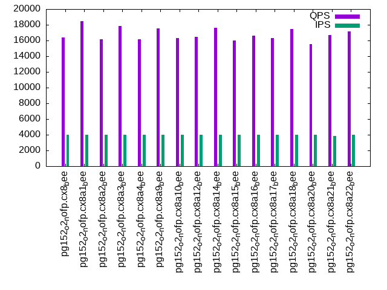

Introduction
This is a report for the insert benchmark with 800M docs and 4 client(s). It is generated by scripts (bash, awk, sed) and Tufte might not be impressed. An overview of the insert benchmark is here and a short update is here. Below, by DBMS, I mean DBMS+version.config. An example is my8020.c10b40 where my means MySQL, 8020 is version 8.0.20 and c10b40 is the name for the configuration file.
The test server has 8 AMD cores, 16G RAM and an NVMe SSD. It is described here as the Beelink. The benchmark was run with 4 clients and there were 1 or 3 connections per client (1 for queries or inserts without rate limits, 1+1 for rate limited inserts+deletes). It uses 4 tables with a table per client. It loads 200M rows per table without secondary indexes, creates secondary indexes, then inserts 10M rows per table with a delete per insert to avoid growing the table. It then does 3 read+write tests for 1800s each that do queries as fast as possible with 100, 500 and then 1000 inserts/second/client concurrent with the queries and 1000 deletes/second to avoid growing the table. The database is cached by Postgres. Clients and the DBMS share one server. The per-database configs are in the per-database subdirectories here.
The tested DBMS are:
- pg152_o2_nofp.cx8_bee - Postgres 15.2, cx8_bee config, o2_nofp build that used: -O2 -no-omit-frame-pointer
- pg152_o2_nofp.cx8a1_bee - Postgres 15.2, cx8a1_bee config, o2_nofp build that used: -O2 -no-omit-frame-pointer, adds wal_compression=lz4
- pg152_o2_nofp.cx8a2_bee - Postgres 15.2, cx8a2_bee config, o2_nofp build that used: -O2 -no-omit-frame-pointer, adds backend_flush_after=256kb
- pg152_o2_nofp.cx8a3_bee - Postgres 15.2, cx8a3_bee config, o2_nofp build that used: -O2 -no-omit-frame-pointer, adds full_page_writes=off
- pg152_o2_nofp.cx8a4_bee - Postgres 15.2, cx8a4_bee config, o2_nofp build that used: -O2 -no-omit-frame-pointer, adds checkpoint_timeout=1800s which already set in the cx8_bee config
- pg152_o2_nofp.cx8a9_bee - Postgres 15.2, cx8a9_bee config, o2_nofp build that used: -O2 -no-omit-frame-pointer, adds checkpoint_timeout=900s
- pg152_o2_nofp.cx8a10_bee - Postgres 15.2, cx8a10_bee config, o2_nofp build that used: -O2 -no-omit-frame-pointer, adds autovacuum_work_mem=256MB
- pg152_o2_nofp.cx8a12_bee - Postgres 15.2, cx8a12_bee config, o2_nofp build that used: -O2 -no-omit-frame-pointer, adds wal_buffers=64MB
- pg152_o2_nofp.cx8a14_bee - Postgres 15.2, cx8a14_bee config, o2_nofp build that used: -O2 -no-omit-frame-pointer, adds backend_flush_after=1MB
- pg152_o2_nofp.cx8a15_bee - Postgres 15.2, cx8a15_bee config, o2_nofp build that used: -O2 -no-omit-frame-pointer, adds max_wal_size=10G
- pg152_o2_nofp.cx8a16_bee - Postgres 15.2, cx8a16_bee config, o2_nofp build that used: -O2 -no-omit-frame-pointer, adds autovacuum_vacuum_scale_factor=0.05 autovacuum_vacuum_insert_scale_factor=0.05
- pg152_o2_nofp.cx8a17_bee - Postgres 15.2, cx8a17_bee config, o2_nofp build that used: -O2 -no-omit-frame-pointer, reduces bgwriter_lru_maxpages from 2000 to 500
- pg152_o2_nofp.cx8a18_bee - Postgres 15.2, cx8a18_bee config, o2_nofp build that used: -O2 -no-omit-frame-pointer, combines a1, a10, a12, a16
- pg152_o2_nofp.cx8a20_bee - Postgres 15.2, cx8a20_bee config, o2_nofp build that used: -O2 -no-omit-frame-pointer, combines a10, a12, a16
- pg152_o2_nofp.cx8a21_bee - Postgres 15.2, cx8a21_bee config, o2_nofp build that used: -O2 -no-omit-frame-pointer, combines a1, a4, a10, a16
- pg152_o2_nofp.cx8a22_bee - Postgres 15.2, cx8a22_bee config, o2_nofp build that used: -O2 -no-omit-frame-pointer, combines a1, a10, a16
Contents
- Summary
- l.i0: load without secondary indexes
- l.x: create secondary indexes
- l.i1: continue load after secondary indexes created
- q100.1: range queries with 100 insert/s per client
- q500.1: range queries with 500 insert/s per client
- q1000.1: range queries with 1000 insert/s per client
Summary
The numbers are inserts/s for l.i0 and l.i1, indexed docs (or rows) /s for l.x and queries/s for q*.2. The values are the average rate over the entire test for inserts (IPS) and queries (QPS). The range of values for IPS and QPS is split into 3 parts: bottom 25%, middle 50%, top 25%. Values in the bottom 25% have a red background, values in the top 25% have a green background and values in the middle have no color. A gray background is used for values that can be ignored because the DBMS did not sustain the target insert rate. Red backgrounds are not used when the minimum value is within 80% of the max value.
| dbms | l.i0 | l.x | l.i1 | q100.1 | q500.1 | q1000.1 |
|---|---|---|---|---|---|---|
| pg152_o2_nofp.cx8_bee | 277971 | 774540 | 7241 | 37087 | 24846 | 16386 |
| pg152_o2_nofp.cx8a1_bee | 278164 | 789053 | 6246 | 36462 | 24760 | 18449 |
| pg152_o2_nofp.cx8a2_bee | 278261 | 787500 | 6396 | 35035 | 23663 | 16151 |
| pg152_o2_nofp.cx8a3_bee | 276817 | 786726 | 10088 | 36784 | 25919 | 17808 |
| pg152_o2_nofp.cx8a4_bee | 277681 | 776796 | 6843 | 36851 | 25695 | 16126 |
| pg152_o2_nofp.cx8a9_bee | 278067 | 781348 | 5883 | 35922 | 24368 | 17525 |
| pg152_o2_nofp.cx8a10_bee | 277585 | 785182 | 7253 | 36346 | 24710 | 16318 |
| pg152_o2_nofp.cx8a12_bee | 277971 | 789053 | 7460 | 36568 | 25447 | 16495 |
| pg152_o2_nofp.cx8a14_bee | 278067 | 785953 | 6416 | 37411 | 25084 | 17604 |
| pg152_o2_nofp.cx8a15_bee | 278164 | 782877 | 5643 | 36670 | 23786 | 15981 |
| pg152_o2_nofp.cx8a16_bee | 278552 | 798503 | 7943 | 36812 | 24809 | 16592 |
| pg152_o2_nofp.cx8a17_bee | 276243 | 789053 | 7888 | 37400 | 25626 | 16286 |
| pg152_o2_nofp.cx8a18_bee | 279037 | 783643 | 5787 | 36296 | 25041 | 17429 |
| pg152_o2_nofp.cx8a20_bee | 278940 | 786726 | 7851 | 36367 | 24685 | 15552 |
| pg152_o2_nofp.cx8a21_bee | 277681 | 784412 | 6400 | 35351 | 25286 | 16676 |
| pg152_o2_nofp.cx8a22_bee | 279427 | 782877 | 5355 | 36982 | 25170 | 17130 |
This table has relative throughput, throughput for the DBMS relative to the DBMS in the first line, using the absolute throughput from the previous table. Values less than 0.95 have a yellow background. Values greater than 1.05 have a blue background.
| dbms | l.i0 | l.x | l.i1 | q100.1 | q500.1 | q1000.1 |
|---|---|---|---|---|---|---|
| pg152_o2_nofp.cx8_bee | 1.00 | 1.00 | 1.00 | 1.00 | 1.00 | 1.00 |
| pg152_o2_nofp.cx8a1_bee | 1.00 | 1.02 | 0.86 | 0.98 | 1.00 | 1.13 |
| pg152_o2_nofp.cx8a2_bee | 1.00 | 1.02 | 0.88 | 0.94 | 0.95 | 0.99 |
| pg152_o2_nofp.cx8a3_bee | 1.00 | 1.02 | 1.39 | 0.99 | 1.04 | 1.09 |
| pg152_o2_nofp.cx8a4_bee | 1.00 | 1.00 | 0.95 | 0.99 | 1.03 | 0.98 |
| pg152_o2_nofp.cx8a9_bee | 1.00 | 1.01 | 0.81 | 0.97 | 0.98 | 1.07 |
| pg152_o2_nofp.cx8a10_bee | 1.00 | 1.01 | 1.00 | 0.98 | 0.99 | 1.00 |
| pg152_o2_nofp.cx8a12_bee | 1.00 | 1.02 | 1.03 | 0.99 | 1.02 | 1.01 |
| pg152_o2_nofp.cx8a14_bee | 1.00 | 1.01 | 0.89 | 1.01 | 1.01 | 1.07 |
| pg152_o2_nofp.cx8a15_bee | 1.00 | 1.01 | 0.78 | 0.99 | 0.96 | 0.98 |
| pg152_o2_nofp.cx8a16_bee | 1.00 | 1.03 | 1.10 | 0.99 | 1.00 | 1.01 |
| pg152_o2_nofp.cx8a17_bee | 0.99 | 1.02 | 1.09 | 1.01 | 1.03 | 0.99 |
| pg152_o2_nofp.cx8a18_bee | 1.00 | 1.01 | 0.80 | 0.98 | 1.01 | 1.06 |
| pg152_o2_nofp.cx8a20_bee | 1.00 | 1.02 | 1.08 | 0.98 | 0.99 | 0.95 |
| pg152_o2_nofp.cx8a21_bee | 1.00 | 1.01 | 0.88 | 0.95 | 1.02 | 1.02 |
| pg152_o2_nofp.cx8a22_bee | 1.01 | 1.01 | 0.74 | 1.00 | 1.01 | 1.05 |
This lists the average rate of inserts/s for the tests that do inserts concurrent with queries. For such tests the query rate is listed in the table above. The read+write tests are setup so that the insert rate should match the target rate every second. Cells that are not at least 95% of the target have a red background to indicate a failure to satisfy the target.
| dbms | q100.1 | q500.1 | q1000.1 |
|---|---|---|---|
| pg152_o2_nofp.cx8_bee | 398 | 1993 | 3987 |
| pg152_o2_nofp.cx8a1_bee | 399 | 1993 | 3987 |
| pg152_o2_nofp.cx8a2_bee | 398 | 1993 | 3989 |
| pg152_o2_nofp.cx8a3_bee | 399 | 1993 | 3987 |
| pg152_o2_nofp.cx8a4_bee | 399 | 1992 | 3989 |
| pg152_o2_nofp.cx8a9_bee | 399 | 1993 | 3989 |
| pg152_o2_nofp.cx8a10_bee | 399 | 1993 | 3962 |
| pg152_o2_nofp.cx8a12_bee | 399 | 1993 | 3989 |
| pg152_o2_nofp.cx8a14_bee | 399 | 1993 | 3989 |
| pg152_o2_nofp.cx8a15_bee | 399 | 1992 | 3989 |
| pg152_o2_nofp.cx8a16_bee | 399 | 1993 | 3989 |
| pg152_o2_nofp.cx8a17_bee | 399 | 1993 | 3987 |
| pg152_o2_nofp.cx8a18_bee | 398 | 1993 | 3989 |
| pg152_o2_nofp.cx8a20_bee | 399 | 1993 | 3987 |
| pg152_o2_nofp.cx8a21_bee | 398 | 1993 | 3865 |
| pg152_o2_nofp.cx8a22_bee | 399 | 1993 | 3987 |
| target | 400 | 2000 | 4000 |
l.i0
l.i0: load without secondary indexes. Graphs for performance per 1-second interval are here.
Average throughput:
Insert response time histogram: each cell has the percentage of responses that take <= the time in the header and max is the max response time in seconds. For the max column values in the top 25% of the range have a red background and in the bottom 25% of the range have a green background. The red background is not used when the min value is within 80% of the max value.
| dbms | 256us | 1ms | 4ms | 16ms | 64ms | 256ms | 1s | 4s | 16s | gt | max |
|---|---|---|---|---|---|---|---|---|---|---|---|
| pg152_o2_nofp.cx8_bee | 99.893 | 0.101 | 0.005 | nonzero | 0.128 | ||||||
| pg152_o2_nofp.cx8a1_bee | 99.902 | 0.097 | 0.001 | nonzero | 0.101 | ||||||
| pg152_o2_nofp.cx8a2_bee | 99.905 | 0.092 | 0.003 | nonzero | 0.099 | ||||||
| pg152_o2_nofp.cx8a3_bee | 99.901 | 0.098 | 0.001 | nonzero | 0.100 | ||||||
| pg152_o2_nofp.cx8a4_bee | 99.896 | 0.100 | 0.003 | 0.001 | 0.105 | ||||||
| pg152_o2_nofp.cx8a9_bee | 99.899 | 0.099 | 0.002 | nonzero | 0.100 | ||||||
| pg152_o2_nofp.cx8a10_bee | 99.912 | 0.086 | 0.002 | nonzero | 0.099 | ||||||
| pg152_o2_nofp.cx8a12_bee | 99.897 | 0.102 | 0.001 | nonzero | 0.097 | ||||||
| pg152_o2_nofp.cx8a14_bee | 99.901 | 0.096 | 0.002 | nonzero | 0.100 | ||||||
| pg152_o2_nofp.cx8a15_bee | 99.869 | 0.127 | 0.003 | 0.001 | 0.101 | ||||||
| pg152_o2_nofp.cx8a16_bee | 99.903 | 0.095 | 0.002 | nonzero | 0.100 | ||||||
| pg152_o2_nofp.cx8a17_bee | 99.888 | 0.107 | 0.004 | nonzero | 0.099 | ||||||
| pg152_o2_nofp.cx8a18_bee | 99.911 | 0.088 | 0.001 | nonzero | 0.101 | ||||||
| pg152_o2_nofp.cx8a20_bee | 99.910 | 0.088 | 0.001 | nonzero | 0.100 | ||||||
| pg152_o2_nofp.cx8a21_bee | 99.910 | 0.089 | 0.001 | nonzero | 0.101 | ||||||
| pg152_o2_nofp.cx8a22_bee | 99.909 | 0.089 | 0.001 | 0.001 | 0.104 |
Performance metrics for the DBMS listed above. Some are normalized by throughput, others are not. Legend for results is here.
ips qps rps rmbps wps wmbps rpq rkbpq wpi wkbpi csps cpups cspq cpupq dbgb1 dbgb2 rss maxop p50 p99 tag 277971 0 457 4.8 703.3 125.5 0.002 0.018 0.003 0.462 26737 81.1 0.096 23 76.5 116.6 0.4 0.128 70523 60234 800m.pg152_o2_nofp.cx8_bee 278164 0 475 4.9 696.9 117.7 0.002 0.018 0.003 0.433 27007 81.0 0.097 23 76.5 116.6 0.0 0.101 70251 62430 800m.pg152_o2_nofp.cx8a1_bee 278261 0 463 4.6 721.2 120.7 0.002 0.017 0.003 0.444 26841 81.0 0.096 23 76.5 116.6 0.0 0.099 70423 62332 800m.pg152_o2_nofp.cx8a2_bee 276817 0 457 4.6 721.7 115.4 0.002 0.017 0.003 0.427 27008 81.0 0.098 23 76.5 116.6 0.0 0.100 69983 61847 800m.pg152_o2_nofp.cx8a3_bee 277681 0 461 5.0 685.1 122.7 0.002 0.018 0.002 0.452 26593 80.9 0.096 23 76.5 116.6 0.0 0.105 70345 60094 800m.pg152_o2_nofp.cx8a4_bee 278067 0 475 4.9 712.3 119.8 0.002 0.018 0.003 0.441 27000 81.0 0.097 23 76.5 116.6 0.0 0.100 70348 62232 800m.pg152_o2_nofp.cx8a9_bee 277585 0 450 4.3 740.4 121.1 0.002 0.016 0.003 0.447 26956 80.9 0.097 23 76.5 116.6 0.0 0.099 70324 62132 800m.pg152_o2_nofp.cx8a10_bee 277971 0 457 4.8 707.7 120.6 0.002 0.018 0.003 0.444 26977 81.0 0.097 23 76.5 116.6 0.0 0.097 70422 61374 800m.pg152_o2_nofp.cx8a12_bee 278067 0 464 4.6 688.1 120.7 0.002 0.017 0.002 0.444 26986 81.0 0.097 23 76.5 116.6 0.0 0.100 70349 61034 800m.pg152_o2_nofp.cx8a14_bee 278164 0 474 5.0 491.4 130.8 0.002 0.018 0.002 0.482 26602 81.0 0.096 23 76.5 86.6 0.0 0.101 70424 59536 800m.pg152_o2_nofp.cx8a15_bee 278552 0 438 3.4 686.3 115.5 0.002 0.013 0.002 0.425 27038 81.1 0.097 23 76.5 116.6 0.0 0.100 70349 61932 800m.pg152_o2_nofp.cx8a16_bee 276243 0 446 4.6 703.3 120.3 0.002 0.017 0.003 0.446 26355 80.9 0.095 23 76.5 116.6 0.0 0.099 69724 62126 800m.pg152_o2_nofp.cx8a17_bee 279037 0 448 3.5 683.0 114.4 0.002 0.013 0.002 0.420 26895 81.0 0.096 23 76.5 116.6 0.0 0.101 70453 62854 800m.pg152_o2_nofp.cx8a18_bee 278940 0 435 3.4 677.7 115.0 0.002 0.013 0.002 0.422 27053 81.0 0.097 23 76.5 116.6 0.0 0.100 70624 62931 800m.pg152_o2_nofp.cx8a20_bee 277681 0 441 3.5 668.4 113.8 0.002 0.013 0.002 0.420 26789 81.0 0.096 23 76.5 116.6 0.0 0.101 69924 62054 800m.pg152_o2_nofp.cx8a21_bee 279427 0 443 3.5 686.7 115.5 0.002 0.013 0.002 0.423 26745 81.0 0.096 23 76.5 116.6 0.6 0.104 70724 62033 800m.pg152_o2_nofp.cx8a22_bee
l.x
l.x: create secondary indexes.
Average throughput:
Performance metrics for the DBMS listed above. Some are normalized by throughput, others are not. Legend for results is here.
ips qps rps rmbps wps wmbps rpq rkbpq wpi wkbpi csps cpups cspq cpupq dbgb1 dbgb2 rss maxop p50 p99 tag 774540 0 1967 243.5 689.0 233.1 0.003 0.322 0.001 0.308 4308 46.6 0.006 5 147.0 187.1 0.0 0.006 NA NA 800m.pg152_o2_nofp.cx8_bee 789053 0 1998 248.1 601.5 208.9 0.003 0.322 0.001 0.271 2460 48.1 0.003 5 147.0 187.1 0.0 0.006 NA NA 800m.pg152_o2_nofp.cx8a1_bee 787500 0 2020 248.5 719.7 240.3 0.003 0.323 0.001 0.312 4662 47.1 0.006 5 147.0 187.1 0.0 0.005 NA NA 800m.pg152_o2_nofp.cx8a2_bee 786726 0 2019 248.5 723.3 236.9 0.003 0.323 0.001 0.308 4444 47.1 0.006 5 147.0 187.1 0.0 0.005 NA NA 800m.pg152_o2_nofp.cx8a3_bee 776796 0 1967 244.0 680.0 233.9 0.003 0.322 0.001 0.308 4673 46.6 0.006 5 147.0 187.1 0.0 0.007 NA NA 800m.pg152_o2_nofp.cx8a4_bee 781348 0 1987 246.1 695.3 234.6 0.003 0.322 0.001 0.308 4362 47.0 0.006 5 147.0 187.1 0.0 0.005 NA NA 800m.pg152_o2_nofp.cx8a9_bee 785182 0 2015 247.9 705.5 238.9 0.003 0.323 0.001 0.312 4441 47.1 0.006 5 147.0 187.1 0.0 0.005 NA NA 800m.pg152_o2_nofp.cx8a10_bee 789053 0 2003 248.1 687.2 235.7 0.003 0.322 0.001 0.306 4354 47.2 0.006 5 147.0 187.1 0.0 0.006 NA NA 800m.pg152_o2_nofp.cx8a12_bee 785953 0 2001 247.3 707.8 236.4 0.003 0.322 0.001 0.308 4439 47.1 0.006 5 147.0 187.1 0.0 0.006 NA NA 800m.pg152_o2_nofp.cx8a14_bee 782877 0 1989 246.4 696.1 237.1 0.003 0.322 0.001 0.310 4602 46.9 0.006 5 147.0 157.1 0.0 0.006 NA NA 800m.pg152_o2_nofp.cx8a15_bee 798503 0 2029 251.4 688.7 235.7 0.003 0.322 0.001 0.302 4834 47.4 0.006 5 147.0 187.1 0.0 0.009 NA NA 800m.pg152_o2_nofp.cx8a16_bee 789053 0 2006 248.5 700.3 236.8 0.003 0.323 0.001 0.307 4638 47.3 0.006 5 147.0 187.1 0.0 0.008 NA NA 800m.pg152_o2_nofp.cx8a17_bee 783643 0 1990 246.6 583.5 205.6 0.003 0.322 0.001 0.269 2559 47.7 0.003 5 147.0 187.1 0.0 0.010 NA NA 800m.pg152_o2_nofp.cx8a18_bee 786726 0 1999 247.6 671.5 231.9 0.003 0.322 0.001 0.302 4697 46.8 0.006 5 147.0 187.1 0.0 0.006 NA NA 800m.pg152_o2_nofp.cx8a20_bee 784412 0 1991 246.9 588.9 205.5 0.003 0.322 0.001 0.268 2592 47.7 0.003 5 147.0 187.1 0.0 0.007 NA NA 800m.pg152_o2_nofp.cx8a21_bee 782877 0 1987 246.5 659.0 230.5 0.003 0.322 0.001 0.302 4699 46.8 0.006 5 147.0 187.1 0.0 0.004 NA NA 800m.pg152_o2_nofp.cx8a22_bee
l.i1
l.i1: continue load after secondary indexes created. Graphs for performance per 1-second interval are here.
Average throughput:
Insert response time histogram: each cell has the percentage of responses that take <= the time in the header and max is the max response time in seconds. For the max column values in the top 25% of the range have a red background and in the bottom 25% of the range have a green background. The red background is not used when the min value is within 80% of the max value.
| dbms | 256us | 1ms | 4ms | 16ms | 64ms | 256ms | 1s | 4s | 16s | gt | max |
|---|---|---|---|---|---|---|---|---|---|---|---|
| pg152_o2_nofp.cx8_bee | 1.169 | 24.215 | 74.374 | 0.242 | 0.162 | ||||||
| pg152_o2_nofp.cx8a1_bee | 24.999 | 74.698 | 0.302 | 0.001 | 0.505 | ||||||
| pg152_o2_nofp.cx8a2_bee | 0.017 | 31.116 | 68.787 | 0.080 | 0.254 | ||||||
| pg152_o2_nofp.cx8a3_bee | 1.434 | 59.378 | 38.854 | 0.333 | 0.211 | ||||||
| pg152_o2_nofp.cx8a4_bee | 0.309 | 24.119 | 75.344 | 0.229 | 0.141 | ||||||
| pg152_o2_nofp.cx8a9_bee | nonzero | 31.692 | 68.071 | 0.237 | 0.149 | ||||||
| pg152_o2_nofp.cx8a10_bee | 14.461 | 85.226 | 0.313 | 0.228 | |||||||
| pg152_o2_nofp.cx8a12_bee | 0.645 | 25.373 | 73.753 | 0.229 | 0.135 | ||||||
| pg152_o2_nofp.cx8a14_bee | nonzero | 29.504 | 70.406 | 0.090 | 0.148 | ||||||
| pg152_o2_nofp.cx8a15_bee | 18.569 | 81.382 | 0.048 | 0.132 | |||||||
| pg152_o2_nofp.cx8a16_bee | 9.146 | 90.394 | 0.460 | 0.230 | |||||||
| pg152_o2_nofp.cx8a17_bee | 12.556 | 86.667 | 0.777 | 0.190 | |||||||
| pg152_o2_nofp.cx8a18_bee | 14.050 | 85.640 | 0.309 | 0.176 | |||||||
| pg152_o2_nofp.cx8a20_bee | 0.218 | 23.065 | 76.376 | 0.340 | nonzero | 0.279 | |||||
| pg152_o2_nofp.cx8a21_bee | 0.008 | 23.925 | 75.738 | 0.329 | nonzero | 0.272 | |||||
| pg152_o2_nofp.cx8a22_bee | 22.951 | 76.744 | 0.305 | nonzero | 0.292 |
Delete response time histogram: each cell has the percentage of responses that take <= the time in the header and max is the max response time in seconds. For the max column values in the top 25% of the range have a red background and in the bottom 25% of the range have a green background. The red background is not used when the min value is within 80% of the max value.
| dbms | 256us | 1ms | 4ms | 16ms | 64ms | 256ms | 1s | 4s | 16s | gt | max |
|---|---|---|---|---|---|---|---|---|---|---|---|
| pg152_o2_nofp.cx8_bee | 0.022 | 65.590 | 2.408 | 9.480 | 18.245 | 4.254 | nonzero | 0.361 | |||
| pg152_o2_nofp.cx8a1_bee | 0.033 | 65.272 | 2.491 | 9.704 | 12.011 | 10.490 | nonzero | 0.331 | |||
| pg152_o2_nofp.cx8a2_bee | 0.018 | 60.310 | 2.427 | 9.533 | 17.811 | 9.900 | 0.001 | 0.477 | |||
| pg152_o2_nofp.cx8a3_bee | 0.020 | 69.111 | 2.408 | 9.757 | 18.702 | 0.002 | 0.217 | ||||
| pg152_o2_nofp.cx8a4_bee | 0.022 | 64.946 | 2.449 | 9.481 | 18.331 | 4.772 | nonzero | 0.305 | |||
| pg152_o2_nofp.cx8a9_bee | 0.023 | 63.375 | 2.500 | 9.564 | 13.225 | 11.313 | 0.251 | ||||
| pg152_o2_nofp.cx8a10_bee | 0.031 | 61.616 | 2.417 | 9.506 | 26.279 | 0.149 | nonzero | 0.384 | |||
| pg152_o2_nofp.cx8a12_bee | 0.019 | 60.809 | 2.448 | 9.519 | 23.021 | 4.184 | nonzero | 0.321 | |||
| pg152_o2_nofp.cx8a14_bee | 0.029 | 60.023 | 2.443 | 9.580 | 13.528 | 14.397 | nonzero | 0.389 | |||
| pg152_o2_nofp.cx8a15_bee | 0.027 | 59.326 | 2.256 | 9.325 | 11.489 | 17.577 | 0.173 | ||||
| pg152_o2_nofp.cx8a16_bee | 0.029 | 62.692 | 3.503 | 15.381 | 17.335 | 1.059 | nonzero | 0.347 | |||
| pg152_o2_nofp.cx8a17_bee | 0.039 | 65.371 | 2.782 | 9.574 | 21.050 | 1.184 | nonzero | 0.272 | |||
| pg152_o2_nofp.cx8a18_bee | 0.034 | 67.045 | 2.642 | 9.633 | 11.096 | 9.550 | nonzero | 0.304 | |||
| pg152_o2_nofp.cx8a20_bee | 0.018 | 65.390 | 2.978 | 11.181 | 16.881 | 3.552 | nonzero | 0.467 | |||
| pg152_o2_nofp.cx8a21_bee | 0.024 | 61.758 | 3.522 | 13.770 | 13.125 | 7.800 | nonzero | 0.317 | |||
| pg152_o2_nofp.cx8a22_bee | 0.037 | 61.269 | 2.954 | 9.891 | 11.596 | 14.252 | nonzero | 0.331 |
Performance metrics for the DBMS listed above. Some are normalized by throughput, others are not. Legend for results is here.
ips qps rps rmbps wps wmbps rpq rkbpq wpi wkbpi csps cpups cspq cpupq dbgb1 dbgb2 rss maxop p50 p99 tag 7241 0 11919 96.6 13049.2 186.8 1.646 13.664 1.802 26.414 28618 34.3 3.952 379 153.9 194.0 0.0 0.162 2199 1049 800m.pg152_o2_nofp.cx8_bee 6246 0 10651 85.8 11602.2 129.1 1.705 14.066 1.858 21.160 24806 39.1 3.972 501 153.9 194.0 0.0 0.505 1998 449 800m.pg152_o2_nofp.cx8a1_bee 6396 0 10477 95.6 11642.0 170.7 1.638 15.307 1.820 27.328 25097 38.6 3.924 483 153.4 193.5 0.0 0.254 700 549 800m.pg152_o2_nofp.cx8a2_bee 10088 0 16275 134.1 17573.3 146.4 1.613 13.609 1.742 14.865 37539 36.8 3.721 292 153.9 193.9 10.1 0.211 3097 1348 800m.pg152_o2_nofp.cx8a3_bee 6843 0 11364 91.6 12422.9 177.3 1.661 13.710 1.815 26.527 27190 33.4 3.973 390 153.9 194.0 0.0 0.141 2347 1100 800m.pg152_o2_nofp.cx8a4_bee 5883 0 9693 78.3 10691.0 150.1 1.648 13.625 1.817 26.133 23142 36.6 3.934 498 153.9 194.0 0.0 0.149 1849 800 800m.pg152_o2_nofp.cx8a9_bee 7253 0 12726 113.5 13899.3 207.7 1.755 16.029 1.916 29.318 30319 39.1 4.180 431 153.6 193.7 0.1 0.228 2048 749 800m.pg152_o2_nofp.cx8a10_bee 7460 0 12372 99.8 13526.8 191.8 1.658 13.703 1.813 26.332 29445 38.9 3.947 417 153.9 194.0 0.0 0.135 2299 1099 800m.pg152_o2_nofp.cx8a12_bee 6416 0 10737 86.9 11915.5 164.3 1.673 13.863 1.857 26.227 25488 41.0 3.972 511 153.9 194.0 0.0 0.148 949 599 800m.pg152_o2_nofp.cx8a14_bee 5643 0 10209 81.8 12210.2 206.4 1.809 14.834 2.164 37.448 23360 40.7 4.139 577 153.9 164.0 0.0 0.132 1498 449 800m.pg152_o2_nofp.cx8a15_bee 7943 0 14252 132.3 15475.1 233.1 1.794 17.060 1.948 30.052 34262 35.0 4.314 353 152.9 192.9 0.0 0.230 2098 549 800m.pg152_o2_nofp.cx8a16_bee 7888 0 13946 116.3 15021.4 219.5 1.768 15.095 1.904 28.496 33042 36.9 4.189 374 153.6 193.6 0.0 0.190 2148 1199 800m.pg152_o2_nofp.cx8a17_bee 5787 0 10218 86.4 11096.0 126.4 1.766 15.295 1.917 22.359 23929 34.2 4.135 473 153.7 193.7 4.7 0.176 1748 449 800m.pg152_o2_nofp.cx8a18_bee 7851 0 13182 119.4 14416.2 211.4 1.679 15.579 1.836 27.578 31672 37.2 4.034 379 153.0 193.0 0.0 0.279 2247 1299 800m.pg152_o2_nofp.cx8a20_bee 6400 0 10840 98.2 11748.8 135.1 1.694 15.716 1.836 21.617 25410 34.7 3.970 434 153.3 193.3 0.0 0.272 1898 449 800m.pg152_o2_nofp.cx8a21_bee 5355 0 9285 83.7 10442.6 150.2 1.734 15.996 1.950 28.716 22151 36.4 4.136 544 153.9 193.9 0.0 0.292 1948 499 800m.pg152_o2_nofp.cx8a22_bee
q100.1
q100.1: range queries with 100 insert/s per client. Graphs for performance per 1-second interval are here.
Average throughput:

Query response time histogram: each cell has the percentage of responses that take <= the time in the header and max is the max response time in seconds. For max values in the top 25% of the range have a red background and in the bottom 25% of the range have a green background. The red background is not used when the min value is within 80% of the max value.
| dbms | 256us | 1ms | 4ms | 16ms | 64ms | 256ms | 1s | 4s | 16s | gt | max |
|---|---|---|---|---|---|---|---|---|---|---|---|
| pg152_o2_nofp.cx8_bee | 98.266 | 1.716 | 0.017 | 0.001 | nonzero | 0.033 | |||||
| pg152_o2_nofp.cx8a1_bee | 98.145 | 1.834 | 0.020 | 0.001 | nonzero | 0.036 | |||||
| pg152_o2_nofp.cx8a2_bee | 97.498 | 2.445 | 0.056 | 0.001 | nonzero | 0.032 | |||||
| pg152_o2_nofp.cx8a3_bee | 98.255 | 1.724 | 0.020 | 0.001 | nonzero | 0.024 | |||||
| pg152_o2_nofp.cx8a4_bee | 98.230 | 1.754 | 0.015 | 0.001 | nonzero | 0.025 | |||||
| pg152_o2_nofp.cx8a9_bee | 98.020 | 1.957 | 0.022 | 0.001 | nonzero | 0.031 | |||||
| pg152_o2_nofp.cx8a10_bee | 97.906 | 2.055 | 0.038 | 0.001 | nonzero | 0.032 | |||||
| pg152_o2_nofp.cx8a12_bee | 98.173 | 1.807 | 0.019 | 0.001 | nonzero | 0.031 | |||||
| pg152_o2_nofp.cx8a14_bee | 98.306 | 1.678 | 0.015 | 0.001 | nonzero | 0.028 | |||||
| pg152_o2_nofp.cx8a15_bee | 98.103 | 1.872 | 0.023 | 0.001 | nonzero | 0.032 | |||||
| pg152_o2_nofp.cx8a16_bee | 97.985 | 1.986 | 0.028 | 0.001 | nonzero | 0.031 | |||||
| pg152_o2_nofp.cx8a17_bee | 98.295 | 1.686 | 0.018 | 0.001 | nonzero | 0.031 | |||||
| pg152_o2_nofp.cx8a18_bee | 97.886 | 2.079 | 0.035 | 0.001 | nonzero | 0.029 | |||||
| pg152_o2_nofp.cx8a20_bee | 98.000 | 1.970 | 0.029 | 0.001 | nonzero | 0.032 | |||||
| pg152_o2_nofp.cx8a21_bee | 97.495 | 2.455 | 0.049 | 0.001 | nonzero | 0.030 | |||||
| pg152_o2_nofp.cx8a22_bee | 98.075 | 1.894 | 0.030 | 0.001 | nonzero | 0.030 |
Insert response time histogram: each cell has the percentage of responses that take <= the time in the header and max is the max response time in seconds. For max values in the top 25% of the range have a red background and in the bottom 25% of the range have a green background. The red background is not used when the min value is within 80% of the max value.
| dbms | 256us | 1ms | 4ms | 16ms | 64ms | 256ms | 1s | 4s | 16s | gt | max |
|---|---|---|---|---|---|---|---|---|---|---|---|
| pg152_o2_nofp.cx8_bee | 28.882 | 71.118 | 0.056 | ||||||||
| pg152_o2_nofp.cx8a1_bee | 7.847 | 92.153 | 0.056 | ||||||||
| pg152_o2_nofp.cx8a2_bee | 19.194 | 80.764 | 0.042 | 0.088 | |||||||
| pg152_o2_nofp.cx8a3_bee | 62.653 | 37.347 | 0.052 | ||||||||
| pg152_o2_nofp.cx8a4_bee | 18.486 | 81.500 | 0.014 | 0.089 | |||||||
| pg152_o2_nofp.cx8a9_bee | 10.222 | 89.778 | 0.063 | ||||||||
| pg152_o2_nofp.cx8a10_bee | 33.014 | 66.972 | 0.014 | 0.070 | |||||||
| pg152_o2_nofp.cx8a12_bee | 19.847 | 80.153 | 0.056 | ||||||||
| pg152_o2_nofp.cx8a14_bee | 16.944 | 83.056 | 0.048 | ||||||||
| pg152_o2_nofp.cx8a15_bee | 7.451 | 92.535 | 0.014 | 0.106 | |||||||
| pg152_o2_nofp.cx8a16_bee | 29.868 | 70.118 | 0.014 | 0.084 | |||||||
| pg152_o2_nofp.cx8a17_bee | 18.458 | 81.535 | 0.007 | 0.185 | |||||||
| pg152_o2_nofp.cx8a18_bee | 0.743 | 99.257 | 0.057 | ||||||||
| pg152_o2_nofp.cx8a20_bee | 21.035 | 78.965 | 0.050 | ||||||||
| pg152_o2_nofp.cx8a21_bee | 6.111 | 93.882 | 0.007 | 0.067 | |||||||
| pg152_o2_nofp.cx8a22_bee | 17.146 | 82.847 | 0.007 | 0.066 |
Delete response time histogram: each cell has the percentage of responses that take <= the time in the header and max is the max response time in seconds. For max values in the top 25% of the range have a red background and in the bottom 25% of the range have a green background. The red background is not used when the min value is within 80% of the max value.
| dbms | 256us | 1ms | 4ms | 16ms | 64ms | 256ms | 1s | 4s | 16s | gt | max |
|---|---|---|---|---|---|---|---|---|---|---|---|
| pg152_o2_nofp.cx8_bee | 9.125 | 72.167 | 18.507 | 0.194 | 0.007 | 0.019 | |||||
| pg152_o2_nofp.cx8a1_bee | 2.389 | 42.986 | 54.451 | 0.174 | 0.015 | ||||||
| pg152_o2_nofp.cx8a2_bee | 13.278 | 85.764 | 0.917 | 0.042 | 0.015 | ||||||
| pg152_o2_nofp.cx8a3_bee | 11.028 | 70.431 | 18.486 | 0.056 | 0.014 | ||||||
| pg152_o2_nofp.cx8a4_bee | 12.375 | 86.000 | 1.542 | 0.083 | 0.013 | ||||||
| pg152_o2_nofp.cx8a9_bee | 7.090 | 56.312 | 36.451 | 0.146 | 0.013 | ||||||
| pg152_o2_nofp.cx8a10_bee | 11.160 | 87.785 | 1.007 | 0.049 | 0.013 | ||||||
| pg152_o2_nofp.cx8a12_bee | 11.257 | 86.903 | 1.736 | 0.104 | 0.015 | ||||||
| pg152_o2_nofp.cx8a14_bee | 12.076 | 86.333 | 1.472 | 0.118 | 0.015 | ||||||
| pg152_o2_nofp.cx8a15_bee | 10.924 | 70.833 | 18.104 | 0.139 | 0.016 | ||||||
| pg152_o2_nofp.cx8a16_bee | 11.812 | 86.993 | 1.132 | 0.062 | 0.012 | ||||||
| pg152_o2_nofp.cx8a17_bee | 9.694 | 71.757 | 18.444 | 0.104 | 0.014 | ||||||
| pg152_o2_nofp.cx8a18_bee | 4.299 | 58.736 | 36.896 | 0.069 | 0.012 | ||||||
| pg152_o2_nofp.cx8a20_bee | 11.569 | 87.007 | 1.340 | 0.083 | 0.015 | ||||||
| pg152_o2_nofp.cx8a21_bee | 8.535 | 72.729 | 18.597 | 0.139 | 0.015 | ||||||
| pg152_o2_nofp.cx8a22_bee | 14.021 | 84.715 | 1.208 | 0.056 | 0.009 |
Performance metrics for the DBMS listed above. Some are normalized by throughput, others are not. Legend for results is here.
ips qps rps rmbps wps wmbps rpq rkbpq wpi wkbpi csps cpups cspq cpupq dbgb1 dbgb2 rss maxop p50 p99 tag 398 37087 1758 14.9 1082.5 13.5 0.047 0.411 2.717 34.649 144491 49.4 3.896 107 153.9 194.0 0.0 0.033 9701 3772 800m.pg152_o2_nofp.cx8_bee 399 36462 1760 14.9 1189.4 12.2 0.048 0.418 2.984 31.372 141871 49.5 3.891 109 153.9 194.0 0.0 0.036 9513 4459 800m.pg152_o2_nofp.cx8a1_bee 398 35035 2104 18.2 1929.6 22.7 0.060 0.533 4.843 58.378 137750 48.9 3.932 112 153.4 193.5 0.0 0.032 9366 4586 800m.pg152_o2_nofp.cx8a2_bee 399 36784 1738 14.8 1337.3 11.1 0.047 0.411 3.355 28.565 143292 49.4 3.896 107 153.9 193.9 0.0 0.024 9669 3500 800m.pg152_o2_nofp.cx8a3_bee 399 36851 1785 15.1 1108.1 14.1 0.048 0.421 2.779 36.210 143529 49.4 3.895 107 153.9 194.0 0.0 0.025 9701 3629 800m.pg152_o2_nofp.cx8a4_bee 399 35922 1766 14.9 1238.1 16.6 0.049 0.424 3.104 42.745 139896 49.5 3.894 110 153.9 194.0 0.0 0.031 9478 3628 800m.pg152_o2_nofp.cx8a9_bee 399 36346 1904 16.3 1575.3 18.8 0.052 0.459 3.952 48.368 142158 49.2 3.911 108 153.6 193.7 0.0 0.032 9689 4589 800m.pg152_o2_nofp.cx8a10_bee 399 36568 1778 15.1 1116.7 14.4 0.049 0.422 2.800 37.009 142440 49.3 3.895 108 153.9 194.0 0.0 0.031 9593 3564 800m.pg152_o2_nofp.cx8a12_bee 399 37411 1650 13.9 1106.1 13.5 0.044 0.380 2.773 34.731 145391 49.5 3.886 106 153.9 194.0 0.0 0.028 9833 4267 800m.pg152_o2_nofp.cx8a14_bee 399 36670 1749 14.7 1271.3 18.2 0.048 0.411 3.188 46.825 143064 49.3 3.901 108 153.9 164.0 0.0 0.032 9510 4251 800m.pg152_o2_nofp.cx8a15_bee 399 36812 1877 16.0 1288.5 16.2 0.051 0.444 3.233 41.503 143759 49.3 3.905 107 152.9 192.9 0.0 0.031 9781 4395 800m.pg152_o2_nofp.cx8a16_bee 399 37400 1679 14.1 1111.5 14.7 0.045 0.386 2.787 37.692 145383 49.4 3.887 106 153.6 193.6 0.0 0.031 9705 3917 800m.pg152_o2_nofp.cx8a17_bee 398 36296 1900 16.2 1476.1 16.3 0.052 0.457 3.705 41.849 141882 49.4 3.909 109 153.7 193.7 0.0 0.029 9542 4152 800m.pg152_o2_nofp.cx8a18_bee 399 36367 1887 16.2 1321.8 16.4 0.052 0.456 3.314 42.030 141961 49.2 3.904 108 153.0 193.0 0.0 0.032 9621 3358 800m.pg152_o2_nofp.cx8a20_bee 398 35351 2110 18.3 1844.9 19.8 0.060 0.530 4.631 50.789 138897 49.1 3.929 111 153.3 193.3 0.0 0.030 9526 4986 800m.pg152_o2_nofp.cx8a21_bee 399 36982 1795 15.2 1426.1 17.4 0.049 0.420 3.578 44.609 144394 49.2 3.904 106 153.9 193.9 0.0 0.030 9749 3085 800m.pg152_o2_nofp.cx8a22_bee
q500.1
q500.1: range queries with 500 insert/s per client. Graphs for performance per 1-second interval are here.
Average throughput:
Query response time histogram: each cell has the percentage of responses that take <= the time in the header and max is the max response time in seconds. For max values in the top 25% of the range have a red background and in the bottom 25% of the range have a green background. The red background is not used when the min value is within 80% of the max value.
| dbms | 256us | 1ms | 4ms | 16ms | 64ms | 256ms | 1s | 4s | 16s | gt | max |
|---|---|---|---|---|---|---|---|---|---|---|---|
| pg152_o2_nofp.cx8_bee | 89.293 | 10.345 | 0.355 | 0.006 | 0.001 | 0.036 | |||||
| pg152_o2_nofp.cx8a1_bee | 89.138 | 10.568 | 0.285 | 0.008 | nonzero | 0.032 | |||||
| pg152_o2_nofp.cx8a2_bee | 88.411 | 11.056 | 0.527 | 0.005 | 0.001 | 0.034 | |||||
| pg152_o2_nofp.cx8a3_bee | 90.363 | 9.454 | 0.178 | 0.005 | nonzero | 0.030 | |||||
| pg152_o2_nofp.cx8a4_bee | 90.482 | 9.218 | 0.295 | 0.004 | nonzero | 0.033 | |||||
| pg152_o2_nofp.cx8a9_bee | 88.725 | 10.890 | 0.378 | 0.007 | 0.001 | 0.030 | |||||
| pg152_o2_nofp.cx8a10_bee | 89.218 | 10.411 | 0.366 | 0.004 | 0.001 | 0.036 | |||||
| pg152_o2_nofp.cx8a12_bee | 90.148 | 9.546 | 0.302 | 0.004 | nonzero | 0.033 | |||||
| pg152_o2_nofp.cx8a14_bee | 89.461 | 10.185 | 0.349 | 0.004 | nonzero | 0.035 | |||||
| pg152_o2_nofp.cx8a15_bee | 88.159 | 11.316 | 0.516 | 0.007 | 0.001 | 0.032 | |||||
| pg152_o2_nofp.cx8a16_bee | 89.249 | 10.384 | 0.362 | 0.004 | 0.001 | 0.038 | |||||
| pg152_o2_nofp.cx8a17_bee | 90.163 | 9.505 | 0.326 | 0.006 | nonzero | 0.058 | |||||
| pg152_o2_nofp.cx8a18_bee | 89.435 | 10.293 | 0.266 | 0.006 | nonzero | 0.032 | |||||
| pg152_o2_nofp.cx8a20_bee | 89.094 | 10.535 | 0.366 | 0.005 | 0.001 | nonzero | 0.071 | ||||
| pg152_o2_nofp.cx8a21_bee | 89.579 | 10.150 | 0.267 | 0.004 | nonzero | 0.031 | |||||
| pg152_o2_nofp.cx8a22_bee | 89.530 | 10.116 | 0.349 | 0.004 | nonzero | 0.033 |
Insert response time histogram: each cell has the percentage of responses that take <= the time in the header and max is the max response time in seconds. For max values in the top 25% of the range have a red background and in the bottom 25% of the range have a green background. The red background is not used when the min value is within 80% of the max value.
| dbms | 256us | 1ms | 4ms | 16ms | 64ms | 256ms | 1s | 4s | 16s | gt | max |
|---|---|---|---|---|---|---|---|---|---|---|---|
| pg152_o2_nofp.cx8_bee | 4.031 | 95.964 | 0.006 | 0.070 | |||||||
| pg152_o2_nofp.cx8a1_bee | 3.679 | 96.314 | 0.007 | 0.070 | |||||||
| pg152_o2_nofp.cx8a2_bee | 9.186 | 90.796 | 0.018 | 0.082 | |||||||
| pg152_o2_nofp.cx8a3_bee | 48.981 | 51.014 | 0.006 | 0.075 | |||||||
| pg152_o2_nofp.cx8a4_bee | 4.642 | 95.353 | 0.006 | 0.072 | |||||||
| pg152_o2_nofp.cx8a9_bee | 3.135 | 96.851 | 0.014 | 0.094 | |||||||
| pg152_o2_nofp.cx8a10_bee | 4.747 | 95.240 | 0.013 | 0.102 | |||||||
| pg152_o2_nofp.cx8a12_bee | 6.778 | 93.197 | 0.025 | 0.139 | |||||||
| pg152_o2_nofp.cx8a14_bee | 2.261 | 97.717 | 0.022 | 0.089 | |||||||
| pg152_o2_nofp.cx8a15_bee | 0.279 | 99.679 | 0.042 | 0.081 | |||||||
| pg152_o2_nofp.cx8a16_bee | 4.426 | 95.558 | 0.015 | 0.078 | |||||||
| pg152_o2_nofp.cx8a17_bee | 4.838 | 95.079 | 0.083 | 0.102 | |||||||
| pg152_o2_nofp.cx8a18_bee | 8.925 | 91.072 | 0.003 | 0.066 | |||||||
| pg152_o2_nofp.cx8a20_bee | 4.369 | 95.618 | 0.013 | 0.102 | |||||||
| pg152_o2_nofp.cx8a21_bee | 3.929 | 96.065 | 0.006 | 0.075 | |||||||
| pg152_o2_nofp.cx8a22_bee | 3.353 | 96.629 | 0.018 | 0.072 |
Delete response time histogram: each cell has the percentage of responses that take <= the time in the header and max is the max response time in seconds. For max values in the top 25% of the range have a red background and in the bottom 25% of the range have a green background. The red background is not used when the min value is within 80% of the max value.
| dbms | 256us | 1ms | 4ms | 16ms | 64ms | 256ms | 1s | 4s | 16s | gt | max |
|---|---|---|---|---|---|---|---|---|---|---|---|
| pg152_o2_nofp.cx8_bee | 32.426 | 41.972 | 3.314 | 22.161 | 0.126 | 0.028 | |||||
| pg152_o2_nofp.cx8a1_bee | 20.219 | 36.486 | 8.326 | 34.751 | 0.217 | 0.031 | |||||
| pg152_o2_nofp.cx8a2_bee | 45.625 | 53.924 | 0.361 | 0.089 | 0.001 | 0.019 | |||||
| pg152_o2_nofp.cx8a3_bee | 32.450 | 34.083 | 3.274 | 29.815 | 0.378 | 0.032 | |||||
| pg152_o2_nofp.cx8a4_bee | 42.778 | 56.050 | 0.581 | 0.543 | 0.049 | 0.025 | |||||
| pg152_o2_nofp.cx8a9_bee | 29.835 | 38.975 | 5.674 | 25.447 | 0.069 | 0.034 | |||||
| pg152_o2_nofp.cx8a10_bee | 43.436 | 56.085 | 0.399 | 0.081 | 0.014 | ||||||
| pg152_o2_nofp.cx8a12_bee | 43.172 | 56.300 | 0.418 | 0.107 | 0.003 | 0.022 | |||||
| pg152_o2_nofp.cx8a14_bee | 44.072 | 55.344 | 0.472 | 0.108 | 0.003 | 0.020 | |||||
| pg152_o2_nofp.cx8a15_bee | 43.957 | 50.250 | 3.117 | 2.672 | 0.004 | 0.020 | |||||
| pg152_o2_nofp.cx8a16_bee | 42.939 | 56.458 | 0.486 | 0.117 | 0.016 | ||||||
| pg152_o2_nofp.cx8a17_bee | 33.000 | 41.565 | 3.196 | 22.125 | 0.114 | 0.030 | |||||
| pg152_o2_nofp.cx8a18_bee | 21.281 | 34.193 | 5.606 | 38.661 | 0.260 | 0.029 | |||||
| pg152_o2_nofp.cx8a20_bee | 39.715 | 50.378 | 0.374 | 9.296 | 0.237 | 0.034 | |||||
| pg152_o2_nofp.cx8a21_bee | 35.960 | 58.217 | 3.194 | 2.625 | 0.004 | 0.027 | |||||
| pg152_o2_nofp.cx8a22_bee | 45.497 | 53.931 | 0.489 | 0.081 | 0.003 | 0.019 |
Performance metrics for the DBMS listed above. Some are normalized by throughput, others are not. Legend for results is here.
ips qps rps rmbps wps wmbps rpq rkbpq wpi wkbpi csps cpups cspq cpupq dbgb1 dbgb2 rss maxop p50 p99 tag 1993 24846 7636 63.8 5803.4 71.9 0.307 2.630 2.911 36.917 106490 48.8 4.286 157 154.0 194.1 0.0 0.036 6140 5417 800m.pg152_o2_nofp.cx8_bee 1993 24760 7583 63.6 5709.9 59.0 0.306 2.631 2.865 30.287 104566 49.8 4.223 161 154.0 194.1 0.0 0.032 6173 5482 800m.pg152_o2_nofp.cx8a1_bee 1993 23663 7798 74.3 6000.0 81.2 0.330 3.215 3.010 41.729 103681 47.7 4.382 161 153.5 193.5 0.0 0.034 6060 4299 800m.pg152_o2_nofp.cx8a2_bee 1993 25919 7569 63.9 5638.4 45.0 0.292 2.525 2.829 23.116 108917 49.7 4.202 153 154.0 191.4 0.0 0.030 6457 5786 800m.pg152_o2_nofp.cx8a3_bee 1992 25695 7654 64.1 5784.3 71.4 0.298 2.553 2.903 36.698 110516 48.6 4.301 151 154.0 194.1 0.0 0.033 6377 5596 800m.pg152_o2_nofp.cx8a4_bee 1993 24368 7646 63.8 5774.4 72.6 0.314 2.683 2.897 37.273 105080 48.6 4.312 160 154.0 193.4 0.0 0.030 6156 5546 800m.pg152_o2_nofp.cx8a9_bee 1993 24710 7699 64.4 5821.6 72.7 0.312 2.669 2.921 37.359 107334 47.9 4.344 155 153.6 193.7 0.0 0.036 6217 5564 800m.pg152_o2_nofp.cx8a10_bee 1993 25447 7658 64.0 5810.5 72.0 0.301 2.575 2.915 36.975 109835 48.4 4.316 152 154.0 194.1 0.0 0.033 6345 5610 800m.pg152_o2_nofp.cx8a12_bee 1993 25084 7622 63.7 5803.9 71.8 0.304 2.601 2.912 36.897 108588 47.9 4.329 153 154.0 194.1 0.0 0.035 6249 5596 800m.pg152_o2_nofp.cx8a14_bee 1992 23786 7892 65.8 6318.9 90.1 0.332 2.832 3.172 46.295 105486 47.3 4.435 159 154.0 164.1 0.0 0.032 5882 5274 800m.pg152_o2_nofp.cx8a15_bee 1993 24809 7686 64.3 5803.8 72.1 0.310 2.654 2.912 37.056 107741 47.9 4.343 154 152.9 193.0 0.0 0.038 6092 5434 800m.pg152_o2_nofp.cx8a16_bee 1993 25626 7334 61.5 5608.8 70.5 0.286 2.457 2.814 36.212 108811 49.2 4.246 154 153.6 193.7 0.0 0.058 6409 5658 800m.pg152_o2_nofp.cx8a17_bee 1993 25041 7631 64.1 5730.5 57.8 0.305 2.621 2.875 29.708 105645 50.1 4.219 160 153.7 193.8 0.0 0.032 6201 5466 800m.pg152_o2_nofp.cx8a18_bee 1993 24685 7705 64.5 5809.8 72.3 0.312 2.675 2.915 37.150 106546 48.4 4.316 157 153.0 193.1 0.0 0.071 6201 5434 800m.pg152_o2_nofp.cx8a20_bee 1993 25286 7680 64.5 5710.3 58.9 0.304 2.614 2.865 30.281 108083 48.8 4.274 154 153.3 193.3 0.0 0.031 6329 5706 800m.pg152_o2_nofp.cx8a21_bee 1993 25170 7660 64.1 5801.7 72.1 0.304 2.606 2.911 37.015 108924 47.9 4.327 152 153.9 194.0 0.0 0.033 6313 5594 800m.pg152_o2_nofp.cx8a22_bee
q1000.1
q1000.1: range queries with 1000 insert/s per client. Graphs for performance per 1-second interval are here.
Average throughput:
Query response time histogram: each cell has the percentage of responses that take <= the time in the header and max is the max response time in seconds. For max values in the top 25% of the range have a red background and in the bottom 25% of the range have a green background. The red background is not used when the min value is within 80% of the max value.
| dbms | 256us | 1ms | 4ms | 16ms | 64ms | 256ms | 1s | 4s | 16s | gt | max |
|---|---|---|---|---|---|---|---|---|---|---|---|
| pg152_o2_nofp.cx8_bee | 72.847 | 25.373 | 1.756 | 0.022 | 0.002 | 0.036 | |||||
| pg152_o2_nofp.cx8a1_bee | 77.037 | 21.938 | 1.017 | 0.007 | 0.001 | 0.038 | |||||
| pg152_o2_nofp.cx8a2_bee | 73.144 | 24.745 | 2.095 | 0.014 | 0.002 | 0.038 | |||||
| pg152_o2_nofp.cx8a3_bee | 74.316 | 24.816 | 0.841 | 0.026 | 0.001 | 0.034 | |||||
| pg152_o2_nofp.cx8a4_bee | 72.193 | 25.963 | 1.814 | 0.028 | 0.002 | 0.036 | |||||
| pg152_o2_nofp.cx8a9_bee | 75.732 | 22.733 | 1.526 | 0.008 | 0.002 | 0.038 | |||||
| pg152_o2_nofp.cx8a10_bee | 73.727 | 24.227 | 2.027 | 0.017 | 0.002 | 0.040 | |||||
| pg152_o2_nofp.cx8a12_bee | 73.297 | 24.900 | 1.777 | 0.024 | 0.002 | 0.038 | |||||
| pg152_o2_nofp.cx8a14_bee | 76.012 | 22.470 | 1.509 | 0.007 | 0.002 | 0.037 | |||||
| pg152_o2_nofp.cx8a15_bee | 72.919 | 24.731 | 2.332 | 0.016 | 0.002 | 0.038 | |||||
| pg152_o2_nofp.cx8a16_bee | 73.368 | 24.895 | 1.721 | 0.015 | 0.002 | 0.035 | |||||
| pg152_o2_nofp.cx8a17_bee | 72.288 | 25.867 | 1.801 | 0.041 | 0.002 | nonzero | 0.076 | ||||
| pg152_o2_nofp.cx8a18_bee | 75.316 | 23.245 | 1.422 | 0.016 | 0.002 | 0.037 | |||||
| pg152_o2_nofp.cx8a20_bee | 71.325 | 26.390 | 2.253 | 0.030 | 0.002 | nonzero | 0.090 | ||||
| pg152_o2_nofp.cx8a21_bee | 74.158 | 24.376 | 1.448 | 0.016 | 0.002 | nonzero | 0.077 | ||||
| pg152_o2_nofp.cx8a22_bee | 74.758 | 23.592 | 1.637 | 0.012 | 0.002 | 0.038 |
Insert response time histogram: each cell has the percentage of responses that take <= the time in the header and max is the max response time in seconds. For max values in the top 25% of the range have a red background and in the bottom 25% of the range have a green background. The red background is not used when the min value is within 80% of the max value.
| dbms | 256us | 1ms | 4ms | 16ms | 64ms | 256ms | 1s | 4s | 16s | gt | max |
|---|---|---|---|---|---|---|---|---|---|---|---|
| pg152_o2_nofp.cx8_bee | 2.391 | 97.559 | 0.050 | 0.084 | |||||||
| pg152_o2_nofp.cx8a1_bee | 4.055 | 95.915 | 0.030 | 0.077 | |||||||
| pg152_o2_nofp.cx8a2_bee | 3.031 | 96.906 | 0.063 | 0.107 | |||||||
| pg152_o2_nofp.cx8a3_bee | 27.115 | 72.869 | 0.015 | 0.116 | |||||||
| pg152_o2_nofp.cx8a4_bee | 2.895 | 97.056 | 0.049 | 0.117 | |||||||
| pg152_o2_nofp.cx8a9_bee | 1.310 | 98.643 | 0.047 | 0.130 | |||||||
| pg152_o2_nofp.cx8a10_bee | 3.786 | 96.053 | 0.161 | 0.187 | |||||||
| pg152_o2_nofp.cx8a12_bee | 0.474 | 99.462 | 0.064 | 0.157 | |||||||
| pg152_o2_nofp.cx8a14_bee | 0.542 | 99.422 | 0.036 | 0.111 | |||||||
| pg152_o2_nofp.cx8a15_bee | 0.027 | 99.828 | 0.145 | 0.122 | |||||||
| pg152_o2_nofp.cx8a16_bee | 0.990 | 98.969 | 0.042 | 0.098 | |||||||
| pg152_o2_nofp.cx8a17_bee | 1.124 | 97.962 | 0.913 | 0.127 | |||||||
| pg152_o2_nofp.cx8a18_bee | 5.017 | 94.863 | 0.119 | 0.196 | |||||||
| pg152_o2_nofp.cx8a20_bee | 3.201 | 96.630 | 0.169 | 0.250 | |||||||
| pg152_o2_nofp.cx8a21_bee | 7.176 | 92.683 | 0.141 | 0.235 | |||||||
| pg152_o2_nofp.cx8a22_bee | 0.638 | 99.311 | 0.051 | 0.085 |
Delete response time histogram: each cell has the percentage of responses that take <= the time in the header and max is the max response time in seconds. For max values in the top 25% of the range have a red background and in the bottom 25% of the range have a green background. The red background is not used when the min value is within 80% of the max value.
| dbms | 256us | 1ms | 4ms | 16ms | 64ms | 256ms | 1s | 4s | 16s | gt | max |
|---|---|---|---|---|---|---|---|---|---|---|---|
| pg152_o2_nofp.cx8_bee | 11.953 | 42.850 | 0.389 | 2.651 | 42.155 | 0.001 | 0.086 | ||||
| pg152_o2_nofp.cx8a1_bee | 19.047 | 80.156 | 0.545 | 0.247 | 0.005 | 0.045 | |||||
| pg152_o2_nofp.cx8a2_bee | 19.138 | 63.117 | 0.440 | 0.123 | 17.181 | 0.001 | 0.067 | ||||
| pg152_o2_nofp.cx8a3_bee | 7.685 | 26.260 | 0.227 | 7.522 | 58.301 | 0.006 | 0.084 | ||||
| pg152_o2_nofp.cx8a4_bee | 9.949 | 38.633 | 0.428 | 3.703 | 47.272 | 0.015 | 0.124 | ||||
| pg152_o2_nofp.cx8a9_bee | 22.454 | 76.849 | 0.550 | 0.144 | 0.003 | 0.019 | |||||
| pg152_o2_nofp.cx8a10_bee | 18.701 | 65.342 | 0.438 | 5.644 | 9.866 | 0.008 | 0.001 | 0.283 | |||
| pg152_o2_nofp.cx8a12_bee | 15.507 | 55.385 | 0.458 | 0.192 | 28.440 | 0.019 | 0.090 | ||||
| pg152_o2_nofp.cx8a14_bee | 22.753 | 76.505 | 0.566 | 0.173 | 0.003 | 0.020 | |||||
| pg152_o2_nofp.cx8a15_bee | 23.741 | 75.515 | 0.574 | 0.167 | 0.002 | 0.023 | |||||
| pg152_o2_nofp.cx8a16_bee | 17.572 | 62.451 | 0.592 | 0.219 | 19.163 | 0.003 | 0.001 | 0.315 | |||
| pg152_o2_nofp.cx8a17_bee | 9.250 | 35.015 | 0.460 | 4.785 | 50.469 | 0.021 | 0.222 | ||||
| pg152_o2_nofp.cx8a18_bee | 15.278 | 63.188 | 0.478 | 13.520 | 7.535 | 0.039 | |||||
| pg152_o2_nofp.cx8a20_bee | 11.194 | 39.269 | 0.361 | 5.926 | 43.248 | 0.002 | 0.075 | ||||
| pg152_o2_nofp.cx8a21_bee | 16.740 | 67.703 | 0.512 | 0.215 | 14.812 | 0.017 | 0.001 | 0.325 | |||
| pg152_o2_nofp.cx8a22_bee | 19.850 | 65.408 | 0.559 | 0.190 | 13.992 | 0.001 | 0.094 |
Performance metrics for the DBMS listed above. Some are normalized by throughput, others are not. Legend for results is here.
ips qps rps rmbps wps wmbps rpq rkbpq wpi wkbpi csps cpups cspq cpupq dbgb1 dbgb2 rss maxop p50 p99 tag 3987 16386 12987 108.2 10744.5 136.7 0.793 6.764 2.695 35.107 77788 56.3 4.747 275 154.3 194.3 0.0 0.036 4030 3407 800m.pg152_o2_nofp.cx8_bee 3987 18449 13067 109.3 10660.5 108.9 0.708 6.067 2.674 27.981 91887 49.1 4.981 213 154.3 194.3 0.0 0.038 4637 4028 800m.pg152_o2_nofp.cx8a1_bee 3989 16151 13020 118.2 10925.9 148.3 0.806 7.492 2.739 38.081 81971 50.6 5.075 251 153.6 193.6 0.0 0.038 4075 3021 800m.pg152_o2_nofp.cx8a2_bee 3987 17808 12986 108.9 10568.8 84.6 0.729 6.264 2.651 21.734 77994 60.9 4.380 274 154.2 190.8 0.0 0.034 4474 3868 800m.pg152_o2_nofp.cx8a3_bee 3989 16126 12942 107.9 10725.3 136.2 0.803 6.851 2.689 34.965 76107 57.7 4.720 286 154.3 194.3 0.0 0.036 4044 3196 800m.pg152_o2_nofp.cx8a4_bee 3989 17525 13058 108.9 10804.3 137.6 0.745 6.363 2.709 35.321 90326 47.4 5.154 216 154.3 194.3 0.0 0.038 4408 3838 800m.pg152_o2_nofp.cx8a9_bee 3962 16318 13014 118.1 10872.3 147.9 0.798 7.409 2.744 38.232 83465 50.1 5.115 246 153.8 193.8 0.0 0.040 4173 3038 800m.pg152_o2_nofp.cx8a10_bee 3989 16495 12999 108.4 10731.4 136.8 0.788 6.729 2.690 35.115 81404 53.9 4.935 261 154.3 194.4 0.0 0.038 4235 3069 800m.pg152_o2_nofp.cx8a12_bee 3989 17604 13073 109.0 10783.2 137.0 0.743 6.343 2.703 35.161 90510 47.4 5.141 215 154.3 194.3 0.0 0.037 4380 3852 800m.pg152_o2_nofp.cx8a14_bee 3989 15981 13322 110.9 11460.7 174.8 0.834 7.106 2.873 44.879 86219 46.0 5.395 230 154.3 164.3 0.0 0.038 4028 3516 800m.pg152_o2_nofp.cx8a15_bee 3989 16592 13045 108.9 10760.5 137.1 0.786 6.720 2.698 35.186 80341 54.2 4.842 261 153.1 193.2 0.0 0.035 4108 3516 800m.pg152_o2_nofp.cx8a16_bee 3987 16286 12968 108.2 10700.7 137.1 0.796 6.801 2.684 35.213 77065 58.4 4.732 287 153.9 194.0 0.0 0.076 4108 3069 800m.pg152_o2_nofp.cx8a17_bee 3989 17429 13083 118.9 10796.4 117.9 0.751 6.988 2.707 30.255 85875 51.3 4.927 235 153.9 193.9 0.0 0.037 4427 3133 800m.pg152_o2_nofp.cx8a18_bee 3987 15552 12931 117.3 10872.4 147.8 0.831 7.721 2.727 37.955 74069 56.8 4.763 292 153.2 193.3 0.0 0.090 3916 2815 800m.pg152_o2_nofp.cx8a20_bee 3865 16676 12723 115.5 10599.4 115.0 0.763 7.090 2.743 30.466 79466 54.4 4.765 261 153.4 193.5 0.0 0.077 4333 3196 800m.pg152_o2_nofp.cx8a21_bee 3987 17130 13078 109.1 10782.6 137.3 0.763 6.524 2.705 35.261 85657 50.4 5.001 235 154.1 194.1 0.0 0.038 4264 3596 800m.pg152_o2_nofp.cx8a22_bee
l.i0
l.i0: load without secondary indexes
Performance metrics for all DBMS, not just the ones listed above. Some are normalized by throughput, others are not. Legend for results is here.
ips qps rps rmbps wps wmbps rpq rkbpq wpi wkbpi csps cpups cspq cpupq dbgb1 dbgb2 rss maxop p50 p99 tag 277971 0 457 4.8 703.3 125.5 0.002 0.018 0.003 0.462 26737 81.1 0.096 23 76.5 116.6 0.4 0.128 70523 60234 800m.pg152_o2_nofp.cx8_bee 278164 0 475 4.9 696.9 117.7 0.002 0.018 0.003 0.433 27007 81.0 0.097 23 76.5 116.6 0.0 0.101 70251 62430 800m.pg152_o2_nofp.cx8a1_bee 278261 0 463 4.6 721.2 120.7 0.002 0.017 0.003 0.444 26841 81.0 0.096 23 76.5 116.6 0.0 0.099 70423 62332 800m.pg152_o2_nofp.cx8a2_bee 276817 0 457 4.6 721.7 115.4 0.002 0.017 0.003 0.427 27008 81.0 0.098 23 76.5 116.6 0.0 0.100 69983 61847 800m.pg152_o2_nofp.cx8a3_bee 277681 0 461 5.0 685.1 122.7 0.002 0.018 0.002 0.452 26593 80.9 0.096 23 76.5 116.6 0.0 0.105 70345 60094 800m.pg152_o2_nofp.cx8a4_bee 278067 0 475 4.9 712.3 119.8 0.002 0.018 0.003 0.441 27000 81.0 0.097 23 76.5 116.6 0.0 0.100 70348 62232 800m.pg152_o2_nofp.cx8a9_bee 277585 0 450 4.3 740.4 121.1 0.002 0.016 0.003 0.447 26956 80.9 0.097 23 76.5 116.6 0.0 0.099 70324 62132 800m.pg152_o2_nofp.cx8a10_bee 277971 0 457 4.8 707.7 120.6 0.002 0.018 0.003 0.444 26977 81.0 0.097 23 76.5 116.6 0.0 0.097 70422 61374 800m.pg152_o2_nofp.cx8a12_bee 278067 0 464 4.6 688.1 120.7 0.002 0.017 0.002 0.444 26986 81.0 0.097 23 76.5 116.6 0.0 0.100 70349 61034 800m.pg152_o2_nofp.cx8a14_bee 278164 0 474 5.0 491.4 130.8 0.002 0.018 0.002 0.482 26602 81.0 0.096 23 76.5 86.6 0.0 0.101 70424 59536 800m.pg152_o2_nofp.cx8a15_bee 278552 0 438 3.4 686.3 115.5 0.002 0.013 0.002 0.425 27038 81.1 0.097 23 76.5 116.6 0.0 0.100 70349 61932 800m.pg152_o2_nofp.cx8a16_bee 276243 0 446 4.6 703.3 120.3 0.002 0.017 0.003 0.446 26355 80.9 0.095 23 76.5 116.6 0.0 0.099 69724 62126 800m.pg152_o2_nofp.cx8a17_bee 279037 0 448 3.5 683.0 114.4 0.002 0.013 0.002 0.420 26895 81.0 0.096 23 76.5 116.6 0.0 0.101 70453 62854 800m.pg152_o2_nofp.cx8a18_bee 278940 0 435 3.4 677.7 115.0 0.002 0.013 0.002 0.422 27053 81.0 0.097 23 76.5 116.6 0.0 0.100 70624 62931 800m.pg152_o2_nofp.cx8a20_bee 277681 0 441 3.5 668.4 113.8 0.002 0.013 0.002 0.420 26789 81.0 0.096 23 76.5 116.6 0.0 0.101 69924 62054 800m.pg152_o2_nofp.cx8a21_bee 279427 0 443 3.5 686.7 115.5 0.002 0.013 0.002 0.423 26745 81.0 0.096 23 76.5 116.6 0.6 0.104 70724 62033 800m.pg152_o2_nofp.cx8a22_bee
l.x
l.x: create secondary indexes
Performance metrics for all DBMS, not just the ones listed above. Some are normalized by throughput, others are not. Legend for results is here.
ips qps rps rmbps wps wmbps rpq rkbpq wpi wkbpi csps cpups cspq cpupq dbgb1 dbgb2 rss maxop p50 p99 tag 774540 0 1967 243.5 689.0 233.1 0.003 0.322 0.001 0.308 4308 46.6 0.006 5 147.0 187.1 0.0 0.006 NA NA 800m.pg152_o2_nofp.cx8_bee 789053 0 1998 248.1 601.5 208.9 0.003 0.322 0.001 0.271 2460 48.1 0.003 5 147.0 187.1 0.0 0.006 NA NA 800m.pg152_o2_nofp.cx8a1_bee 787500 0 2020 248.5 719.7 240.3 0.003 0.323 0.001 0.312 4662 47.1 0.006 5 147.0 187.1 0.0 0.005 NA NA 800m.pg152_o2_nofp.cx8a2_bee 786726 0 2019 248.5 723.3 236.9 0.003 0.323 0.001 0.308 4444 47.1 0.006 5 147.0 187.1 0.0 0.005 NA NA 800m.pg152_o2_nofp.cx8a3_bee 776796 0 1967 244.0 680.0 233.9 0.003 0.322 0.001 0.308 4673 46.6 0.006 5 147.0 187.1 0.0 0.007 NA NA 800m.pg152_o2_nofp.cx8a4_bee 781348 0 1987 246.1 695.3 234.6 0.003 0.322 0.001 0.308 4362 47.0 0.006 5 147.0 187.1 0.0 0.005 NA NA 800m.pg152_o2_nofp.cx8a9_bee 785182 0 2015 247.9 705.5 238.9 0.003 0.323 0.001 0.312 4441 47.1 0.006 5 147.0 187.1 0.0 0.005 NA NA 800m.pg152_o2_nofp.cx8a10_bee 789053 0 2003 248.1 687.2 235.7 0.003 0.322 0.001 0.306 4354 47.2 0.006 5 147.0 187.1 0.0 0.006 NA NA 800m.pg152_o2_nofp.cx8a12_bee 785953 0 2001 247.3 707.8 236.4 0.003 0.322 0.001 0.308 4439 47.1 0.006 5 147.0 187.1 0.0 0.006 NA NA 800m.pg152_o2_nofp.cx8a14_bee 782877 0 1989 246.4 696.1 237.1 0.003 0.322 0.001 0.310 4602 46.9 0.006 5 147.0 157.1 0.0 0.006 NA NA 800m.pg152_o2_nofp.cx8a15_bee 798503 0 2029 251.4 688.7 235.7 0.003 0.322 0.001 0.302 4834 47.4 0.006 5 147.0 187.1 0.0 0.009 NA NA 800m.pg152_o2_nofp.cx8a16_bee 789053 0 2006 248.5 700.3 236.8 0.003 0.323 0.001 0.307 4638 47.3 0.006 5 147.0 187.1 0.0 0.008 NA NA 800m.pg152_o2_nofp.cx8a17_bee 783643 0 1990 246.6 583.5 205.6 0.003 0.322 0.001 0.269 2559 47.7 0.003 5 147.0 187.1 0.0 0.010 NA NA 800m.pg152_o2_nofp.cx8a18_bee 786726 0 1999 247.6 671.5 231.9 0.003 0.322 0.001 0.302 4697 46.8 0.006 5 147.0 187.1 0.0 0.006 NA NA 800m.pg152_o2_nofp.cx8a20_bee 784412 0 1991 246.9 588.9 205.5 0.003 0.322 0.001 0.268 2592 47.7 0.003 5 147.0 187.1 0.0 0.007 NA NA 800m.pg152_o2_nofp.cx8a21_bee 782877 0 1987 246.5 659.0 230.5 0.003 0.322 0.001 0.302 4699 46.8 0.006 5 147.0 187.1 0.0 0.004 NA NA 800m.pg152_o2_nofp.cx8a22_bee
l.i1
l.i1: continue load after secondary indexes created
Performance metrics for all DBMS, not just the ones listed above. Some are normalized by throughput, others are not. Legend for results is here.
ips qps rps rmbps wps wmbps rpq rkbpq wpi wkbpi csps cpups cspq cpupq dbgb1 dbgb2 rss maxop p50 p99 tag 7241 0 11919 96.6 13049.2 186.8 1.646 13.664 1.802 26.414 28618 34.3 3.952 379 153.9 194.0 0.0 0.162 2199 1049 800m.pg152_o2_nofp.cx8_bee 6246 0 10651 85.8 11602.2 129.1 1.705 14.066 1.858 21.160 24806 39.1 3.972 501 153.9 194.0 0.0 0.505 1998 449 800m.pg152_o2_nofp.cx8a1_bee 6396 0 10477 95.6 11642.0 170.7 1.638 15.307 1.820 27.328 25097 38.6 3.924 483 153.4 193.5 0.0 0.254 700 549 800m.pg152_o2_nofp.cx8a2_bee 10088 0 16275 134.1 17573.3 146.4 1.613 13.609 1.742 14.865 37539 36.8 3.721 292 153.9 193.9 10.1 0.211 3097 1348 800m.pg152_o2_nofp.cx8a3_bee 6843 0 11364 91.6 12422.9 177.3 1.661 13.710 1.815 26.527 27190 33.4 3.973 390 153.9 194.0 0.0 0.141 2347 1100 800m.pg152_o2_nofp.cx8a4_bee 5883 0 9693 78.3 10691.0 150.1 1.648 13.625 1.817 26.133 23142 36.6 3.934 498 153.9 194.0 0.0 0.149 1849 800 800m.pg152_o2_nofp.cx8a9_bee 7253 0 12726 113.5 13899.3 207.7 1.755 16.029 1.916 29.318 30319 39.1 4.180 431 153.6 193.7 0.1 0.228 2048 749 800m.pg152_o2_nofp.cx8a10_bee 7460 0 12372 99.8 13526.8 191.8 1.658 13.703 1.813 26.332 29445 38.9 3.947 417 153.9 194.0 0.0 0.135 2299 1099 800m.pg152_o2_nofp.cx8a12_bee 6416 0 10737 86.9 11915.5 164.3 1.673 13.863 1.857 26.227 25488 41.0 3.972 511 153.9 194.0 0.0 0.148 949 599 800m.pg152_o2_nofp.cx8a14_bee 5643 0 10209 81.8 12210.2 206.4 1.809 14.834 2.164 37.448 23360 40.7 4.139 577 153.9 164.0 0.0 0.132 1498 449 800m.pg152_o2_nofp.cx8a15_bee 7943 0 14252 132.3 15475.1 233.1 1.794 17.060 1.948 30.052 34262 35.0 4.314 353 152.9 192.9 0.0 0.230 2098 549 800m.pg152_o2_nofp.cx8a16_bee 7888 0 13946 116.3 15021.4 219.5 1.768 15.095 1.904 28.496 33042 36.9 4.189 374 153.6 193.6 0.0 0.190 2148 1199 800m.pg152_o2_nofp.cx8a17_bee 5787 0 10218 86.4 11096.0 126.4 1.766 15.295 1.917 22.359 23929 34.2 4.135 473 153.7 193.7 4.7 0.176 1748 449 800m.pg152_o2_nofp.cx8a18_bee 7851 0 13182 119.4 14416.2 211.4 1.679 15.579 1.836 27.578 31672 37.2 4.034 379 153.0 193.0 0.0 0.279 2247 1299 800m.pg152_o2_nofp.cx8a20_bee 6400 0 10840 98.2 11748.8 135.1 1.694 15.716 1.836 21.617 25410 34.7 3.970 434 153.3 193.3 0.0 0.272 1898 449 800m.pg152_o2_nofp.cx8a21_bee 5355 0 9285 83.7 10442.6 150.2 1.734 15.996 1.950 28.716 22151 36.4 4.136 544 153.9 193.9 0.0 0.292 1948 499 800m.pg152_o2_nofp.cx8a22_bee
q100.1
q100.1: range queries with 100 insert/s per client
Performance metrics for all DBMS, not just the ones listed above. Some are normalized by throughput, others are not. Legend for results is here.
ips qps rps rmbps wps wmbps rpq rkbpq wpi wkbpi csps cpups cspq cpupq dbgb1 dbgb2 rss maxop p50 p99 tag 398 37087 1758 14.9 1082.5 13.5 0.047 0.411 2.717 34.649 144491 49.4 3.896 107 153.9 194.0 0.0 0.033 9701 3772 800m.pg152_o2_nofp.cx8_bee 399 36462 1760 14.9 1189.4 12.2 0.048 0.418 2.984 31.372 141871 49.5 3.891 109 153.9 194.0 0.0 0.036 9513 4459 800m.pg152_o2_nofp.cx8a1_bee 398 35035 2104 18.2 1929.6 22.7 0.060 0.533 4.843 58.378 137750 48.9 3.932 112 153.4 193.5 0.0 0.032 9366 4586 800m.pg152_o2_nofp.cx8a2_bee 399 36784 1738 14.8 1337.3 11.1 0.047 0.411 3.355 28.565 143292 49.4 3.896 107 153.9 193.9 0.0 0.024 9669 3500 800m.pg152_o2_nofp.cx8a3_bee 399 36851 1785 15.1 1108.1 14.1 0.048 0.421 2.779 36.210 143529 49.4 3.895 107 153.9 194.0 0.0 0.025 9701 3629 800m.pg152_o2_nofp.cx8a4_bee 399 35922 1766 14.9 1238.1 16.6 0.049 0.424 3.104 42.745 139896 49.5 3.894 110 153.9 194.0 0.0 0.031 9478 3628 800m.pg152_o2_nofp.cx8a9_bee 399 36346 1904 16.3 1575.3 18.8 0.052 0.459 3.952 48.368 142158 49.2 3.911 108 153.6 193.7 0.0 0.032 9689 4589 800m.pg152_o2_nofp.cx8a10_bee 399 36568 1778 15.1 1116.7 14.4 0.049 0.422 2.800 37.009 142440 49.3 3.895 108 153.9 194.0 0.0 0.031 9593 3564 800m.pg152_o2_nofp.cx8a12_bee 399 37411 1650 13.9 1106.1 13.5 0.044 0.380 2.773 34.731 145391 49.5 3.886 106 153.9 194.0 0.0 0.028 9833 4267 800m.pg152_o2_nofp.cx8a14_bee 399 36670 1749 14.7 1271.3 18.2 0.048 0.411 3.188 46.825 143064 49.3 3.901 108 153.9 164.0 0.0 0.032 9510 4251 800m.pg152_o2_nofp.cx8a15_bee 399 36812 1877 16.0 1288.5 16.2 0.051 0.444 3.233 41.503 143759 49.3 3.905 107 152.9 192.9 0.0 0.031 9781 4395 800m.pg152_o2_nofp.cx8a16_bee 399 37400 1679 14.1 1111.5 14.7 0.045 0.386 2.787 37.692 145383 49.4 3.887 106 153.6 193.6 0.0 0.031 9705 3917 800m.pg152_o2_nofp.cx8a17_bee 398 36296 1900 16.2 1476.1 16.3 0.052 0.457 3.705 41.849 141882 49.4 3.909 109 153.7 193.7 0.0 0.029 9542 4152 800m.pg152_o2_nofp.cx8a18_bee 399 36367 1887 16.2 1321.8 16.4 0.052 0.456 3.314 42.030 141961 49.2 3.904 108 153.0 193.0 0.0 0.032 9621 3358 800m.pg152_o2_nofp.cx8a20_bee 398 35351 2110 18.3 1844.9 19.8 0.060 0.530 4.631 50.789 138897 49.1 3.929 111 153.3 193.3 0.0 0.030 9526 4986 800m.pg152_o2_nofp.cx8a21_bee 399 36982 1795 15.2 1426.1 17.4 0.049 0.420 3.578 44.609 144394 49.2 3.904 106 153.9 193.9 0.0 0.030 9749 3085 800m.pg152_o2_nofp.cx8a22_bee
q500.1
q500.1: range queries with 500 insert/s per client
Performance metrics for all DBMS, not just the ones listed above. Some are normalized by throughput, others are not. Legend for results is here.
ips qps rps rmbps wps wmbps rpq rkbpq wpi wkbpi csps cpups cspq cpupq dbgb1 dbgb2 rss maxop p50 p99 tag 1993 24846 7636 63.8 5803.4 71.9 0.307 2.630 2.911 36.917 106490 48.8 4.286 157 154.0 194.1 0.0 0.036 6140 5417 800m.pg152_o2_nofp.cx8_bee 1993 24760 7583 63.6 5709.9 59.0 0.306 2.631 2.865 30.287 104566 49.8 4.223 161 154.0 194.1 0.0 0.032 6173 5482 800m.pg152_o2_nofp.cx8a1_bee 1993 23663 7798 74.3 6000.0 81.2 0.330 3.215 3.010 41.729 103681 47.7 4.382 161 153.5 193.5 0.0 0.034 6060 4299 800m.pg152_o2_nofp.cx8a2_bee 1993 25919 7569 63.9 5638.4 45.0 0.292 2.525 2.829 23.116 108917 49.7 4.202 153 154.0 191.4 0.0 0.030 6457 5786 800m.pg152_o2_nofp.cx8a3_bee 1992 25695 7654 64.1 5784.3 71.4 0.298 2.553 2.903 36.698 110516 48.6 4.301 151 154.0 194.1 0.0 0.033 6377 5596 800m.pg152_o2_nofp.cx8a4_bee 1993 24368 7646 63.8 5774.4 72.6 0.314 2.683 2.897 37.273 105080 48.6 4.312 160 154.0 193.4 0.0 0.030 6156 5546 800m.pg152_o2_nofp.cx8a9_bee 1993 24710 7699 64.4 5821.6 72.7 0.312 2.669 2.921 37.359 107334 47.9 4.344 155 153.6 193.7 0.0 0.036 6217 5564 800m.pg152_o2_nofp.cx8a10_bee 1993 25447 7658 64.0 5810.5 72.0 0.301 2.575 2.915 36.975 109835 48.4 4.316 152 154.0 194.1 0.0 0.033 6345 5610 800m.pg152_o2_nofp.cx8a12_bee 1993 25084 7622 63.7 5803.9 71.8 0.304 2.601 2.912 36.897 108588 47.9 4.329 153 154.0 194.1 0.0 0.035 6249 5596 800m.pg152_o2_nofp.cx8a14_bee 1992 23786 7892 65.8 6318.9 90.1 0.332 2.832 3.172 46.295 105486 47.3 4.435 159 154.0 164.1 0.0 0.032 5882 5274 800m.pg152_o2_nofp.cx8a15_bee 1993 24809 7686 64.3 5803.8 72.1 0.310 2.654 2.912 37.056 107741 47.9 4.343 154 152.9 193.0 0.0 0.038 6092 5434 800m.pg152_o2_nofp.cx8a16_bee 1993 25626 7334 61.5 5608.8 70.5 0.286 2.457 2.814 36.212 108811 49.2 4.246 154 153.6 193.7 0.0 0.058 6409 5658 800m.pg152_o2_nofp.cx8a17_bee 1993 25041 7631 64.1 5730.5 57.8 0.305 2.621 2.875 29.708 105645 50.1 4.219 160 153.7 193.8 0.0 0.032 6201 5466 800m.pg152_o2_nofp.cx8a18_bee 1993 24685 7705 64.5 5809.8 72.3 0.312 2.675 2.915 37.150 106546 48.4 4.316 157 153.0 193.1 0.0 0.071 6201 5434 800m.pg152_o2_nofp.cx8a20_bee 1993 25286 7680 64.5 5710.3 58.9 0.304 2.614 2.865 30.281 108083 48.8 4.274 154 153.3 193.3 0.0 0.031 6329 5706 800m.pg152_o2_nofp.cx8a21_bee 1993 25170 7660 64.1 5801.7 72.1 0.304 2.606 2.911 37.015 108924 47.9 4.327 152 153.9 194.0 0.0 0.033 6313 5594 800m.pg152_o2_nofp.cx8a22_bee
q1000.1
q1000.1: range queries with 1000 insert/s per client
Performance metrics for all DBMS, not just the ones listed above. Some are normalized by throughput, others are not. Legend for results is here.
ips qps rps rmbps wps wmbps rpq rkbpq wpi wkbpi csps cpups cspq cpupq dbgb1 dbgb2 rss maxop p50 p99 tag 3987 16386 12987 108.2 10744.5 136.7 0.793 6.764 2.695 35.107 77788 56.3 4.747 275 154.3 194.3 0.0 0.036 4030 3407 800m.pg152_o2_nofp.cx8_bee 3987 18449 13067 109.3 10660.5 108.9 0.708 6.067 2.674 27.981 91887 49.1 4.981 213 154.3 194.3 0.0 0.038 4637 4028 800m.pg152_o2_nofp.cx8a1_bee 3989 16151 13020 118.2 10925.9 148.3 0.806 7.492 2.739 38.081 81971 50.6 5.075 251 153.6 193.6 0.0 0.038 4075 3021 800m.pg152_o2_nofp.cx8a2_bee 3987 17808 12986 108.9 10568.8 84.6 0.729 6.264 2.651 21.734 77994 60.9 4.380 274 154.2 190.8 0.0 0.034 4474 3868 800m.pg152_o2_nofp.cx8a3_bee 3989 16126 12942 107.9 10725.3 136.2 0.803 6.851 2.689 34.965 76107 57.7 4.720 286 154.3 194.3 0.0 0.036 4044 3196 800m.pg152_o2_nofp.cx8a4_bee 3989 17525 13058 108.9 10804.3 137.6 0.745 6.363 2.709 35.321 90326 47.4 5.154 216 154.3 194.3 0.0 0.038 4408 3838 800m.pg152_o2_nofp.cx8a9_bee 3962 16318 13014 118.1 10872.3 147.9 0.798 7.409 2.744 38.232 83465 50.1 5.115 246 153.8 193.8 0.0 0.040 4173 3038 800m.pg152_o2_nofp.cx8a10_bee 3989 16495 12999 108.4 10731.4 136.8 0.788 6.729 2.690 35.115 81404 53.9 4.935 261 154.3 194.4 0.0 0.038 4235 3069 800m.pg152_o2_nofp.cx8a12_bee 3989 17604 13073 109.0 10783.2 137.0 0.743 6.343 2.703 35.161 90510 47.4 5.141 215 154.3 194.3 0.0 0.037 4380 3852 800m.pg152_o2_nofp.cx8a14_bee 3989 15981 13322 110.9 11460.7 174.8 0.834 7.106 2.873 44.879 86219 46.0 5.395 230 154.3 164.3 0.0 0.038 4028 3516 800m.pg152_o2_nofp.cx8a15_bee 3989 16592 13045 108.9 10760.5 137.1 0.786 6.720 2.698 35.186 80341 54.2 4.842 261 153.1 193.2 0.0 0.035 4108 3516 800m.pg152_o2_nofp.cx8a16_bee 3987 16286 12968 108.2 10700.7 137.1 0.796 6.801 2.684 35.213 77065 58.4 4.732 287 153.9 194.0 0.0 0.076 4108 3069 800m.pg152_o2_nofp.cx8a17_bee 3989 17429 13083 118.9 10796.4 117.9 0.751 6.988 2.707 30.255 85875 51.3 4.927 235 153.9 193.9 0.0 0.037 4427 3133 800m.pg152_o2_nofp.cx8a18_bee 3987 15552 12931 117.3 10872.4 147.8 0.831 7.721 2.727 37.955 74069 56.8 4.763 292 153.2 193.3 0.0 0.090 3916 2815 800m.pg152_o2_nofp.cx8a20_bee 3865 16676 12723 115.5 10599.4 115.0 0.763 7.090 2.743 30.466 79466 54.4 4.765 261 153.4 193.5 0.0 0.077 4333 3196 800m.pg152_o2_nofp.cx8a21_bee 3987 17130 13078 109.1 10782.6 137.3 0.763 6.524 2.705 35.261 85657 50.4 5.001 235 154.1 194.1 0.0 0.038 4264 3596 800m.pg152_o2_nofp.cx8a22_bee
l.i0
- l.i0: load without secondary indexes
- Legend for results is here.
- Each entry lists the percentage of responses that fit in that bucket (slower than max time for previous bucket, faster than min time for next bucket).
Insert response time histogram
256us 1ms 4ms 16ms 64ms 256ms 1s 4s 16s gt max tag 0.000 0.000 99.893 0.101 0.005 nonzero 0.000 0.000 0.000 0.000 0.128 pg152_o2_nofp.cx8_bee 0.000 0.000 99.902 0.097 0.001 nonzero 0.000 0.000 0.000 0.000 0.101 pg152_o2_nofp.cx8a1_bee 0.000 0.000 99.905 0.092 0.003 nonzero 0.000 0.000 0.000 0.000 0.099 pg152_o2_nofp.cx8a2_bee 0.000 0.000 99.901 0.098 0.001 nonzero 0.000 0.000 0.000 0.000 0.100 pg152_o2_nofp.cx8a3_bee 0.000 0.000 99.896 0.100 0.003 0.001 0.000 0.000 0.000 0.000 0.105 pg152_o2_nofp.cx8a4_bee 0.000 0.000 99.899 0.099 0.002 nonzero 0.000 0.000 0.000 0.000 0.100 pg152_o2_nofp.cx8a9_bee 0.000 0.000 99.912 0.086 0.002 nonzero 0.000 0.000 0.000 0.000 0.099 pg152_o2_nofp.cx8a10_bee 0.000 0.000 99.897 0.102 0.001 nonzero 0.000 0.000 0.000 0.000 0.097 pg152_o2_nofp.cx8a12_bee 0.000 0.000 99.901 0.096 0.002 nonzero 0.000 0.000 0.000 0.000 0.100 pg152_o2_nofp.cx8a14_bee 0.000 0.000 99.869 0.127 0.003 0.001 0.000 0.000 0.000 0.000 0.101 pg152_o2_nofp.cx8a15_bee 0.000 0.000 99.903 0.095 0.002 nonzero 0.000 0.000 0.000 0.000 0.100 pg152_o2_nofp.cx8a16_bee 0.000 0.000 99.888 0.107 0.004 nonzero 0.000 0.000 0.000 0.000 0.099 pg152_o2_nofp.cx8a17_bee 0.000 0.000 99.911 0.088 0.001 nonzero 0.000 0.000 0.000 0.000 0.101 pg152_o2_nofp.cx8a18_bee 0.000 0.000 99.910 0.088 0.001 nonzero 0.000 0.000 0.000 0.000 0.100 pg152_o2_nofp.cx8a20_bee 0.000 0.000 99.910 0.089 0.001 nonzero 0.000 0.000 0.000 0.000 0.101 pg152_o2_nofp.cx8a21_bee 0.000 0.000 99.909 0.089 0.001 0.001 0.000 0.000 0.000 0.000 0.104 pg152_o2_nofp.cx8a22_bee
l.x
- l.x: create secondary indexes
- Legend for results is here.
- Each entry lists the percentage of responses that fit in that bucket (slower than max time for previous bucket, faster than min time for next bucket).
TODO - determine whether there is data for create index response time
l.i1
- l.i1: continue load after secondary indexes created
- Legend for results is here.
- Each entry lists the percentage of responses that fit in that bucket (slower than max time for previous bucket, faster than min time for next bucket).
Insert response time histogram
256us 1ms 4ms 16ms 64ms 256ms 1s 4s 16s gt max tag 0.000 0.000 1.169 24.215 74.374 0.242 0.000 0.000 0.000 0.000 0.162 pg152_o2_nofp.cx8_bee 0.000 0.000 0.000 24.999 74.698 0.302 0.001 0.000 0.000 0.000 0.505 pg152_o2_nofp.cx8a1_bee 0.000 0.000 0.017 31.116 68.787 0.080 0.000 0.000 0.000 0.000 0.254 pg152_o2_nofp.cx8a2_bee 0.000 0.000 1.434 59.378 38.854 0.333 0.000 0.000 0.000 0.000 0.211 pg152_o2_nofp.cx8a3_bee 0.000 0.000 0.309 24.119 75.344 0.229 0.000 0.000 0.000 0.000 0.141 pg152_o2_nofp.cx8a4_bee 0.000 0.000 nonzero 31.692 68.071 0.237 0.000 0.000 0.000 0.000 0.149 pg152_o2_nofp.cx8a9_bee 0.000 0.000 0.000 14.461 85.226 0.313 0.000 0.000 0.000 0.000 0.228 pg152_o2_nofp.cx8a10_bee 0.000 0.000 0.645 25.373 73.753 0.229 0.000 0.000 0.000 0.000 0.135 pg152_o2_nofp.cx8a12_bee 0.000 0.000 nonzero 29.504 70.406 0.090 0.000 0.000 0.000 0.000 0.148 pg152_o2_nofp.cx8a14_bee 0.000 0.000 0.000 18.569 81.382 0.048 0.000 0.000 0.000 0.000 0.132 pg152_o2_nofp.cx8a15_bee 0.000 0.000 0.000 9.146 90.394 0.460 0.000 0.000 0.000 0.000 0.230 pg152_o2_nofp.cx8a16_bee 0.000 0.000 0.000 12.556 86.667 0.777 0.000 0.000 0.000 0.000 0.190 pg152_o2_nofp.cx8a17_bee 0.000 0.000 0.000 14.050 85.640 0.309 0.000 0.000 0.000 0.000 0.176 pg152_o2_nofp.cx8a18_bee 0.000 0.000 0.218 23.065 76.376 0.340 nonzero 0.000 0.000 0.000 0.279 pg152_o2_nofp.cx8a20_bee 0.000 0.000 0.008 23.925 75.738 0.329 nonzero 0.000 0.000 0.000 0.272 pg152_o2_nofp.cx8a21_bee 0.000 0.000 0.000 22.951 76.744 0.305 nonzero 0.000 0.000 0.000 0.292 pg152_o2_nofp.cx8a22_bee
Delete response time histogram
256us 1ms 4ms 16ms 64ms 256ms 1s 4s 16s gt max tag 0.022 65.590 2.408 9.480 18.245 4.254 nonzero 0.000 0.000 0.000 0.361 pg152_o2_nofp.cx8_bee 0.033 65.272 2.491 9.704 12.011 10.490 nonzero 0.000 0.000 0.000 0.331 pg152_o2_nofp.cx8a1_bee 0.018 60.310 2.427 9.533 17.811 9.900 0.001 0.000 0.000 0.000 0.477 pg152_o2_nofp.cx8a2_bee 0.020 69.111 2.408 9.757 18.702 0.002 0.000 0.000 0.000 0.000 0.217 pg152_o2_nofp.cx8a3_bee 0.022 64.946 2.449 9.481 18.331 4.772 nonzero 0.000 0.000 0.000 0.305 pg152_o2_nofp.cx8a4_bee 0.023 63.375 2.500 9.564 13.225 11.313 0.000 0.000 0.000 0.000 0.251 pg152_o2_nofp.cx8a9_bee 0.031 61.616 2.417 9.506 26.279 0.149 nonzero 0.000 0.000 0.000 0.384 pg152_o2_nofp.cx8a10_bee 0.019 60.809 2.448 9.519 23.021 4.184 nonzero 0.000 0.000 0.000 0.321 pg152_o2_nofp.cx8a12_bee 0.029 60.023 2.443 9.580 13.528 14.397 nonzero 0.000 0.000 0.000 0.389 pg152_o2_nofp.cx8a14_bee 0.027 59.326 2.256 9.325 11.489 17.577 0.000 0.000 0.000 0.000 0.173 pg152_o2_nofp.cx8a15_bee 0.029 62.692 3.503 15.381 17.335 1.059 nonzero 0.000 0.000 0.000 0.347 pg152_o2_nofp.cx8a16_bee 0.039 65.371 2.782 9.574 21.050 1.184 nonzero 0.000 0.000 0.000 0.272 pg152_o2_nofp.cx8a17_bee 0.034 67.045 2.642 9.633 11.096 9.550 nonzero 0.000 0.000 0.000 0.304 pg152_o2_nofp.cx8a18_bee 0.018 65.390 2.978 11.181 16.881 3.552 nonzero 0.000 0.000 0.000 0.467 pg152_o2_nofp.cx8a20_bee 0.024 61.758 3.522 13.770 13.125 7.800 nonzero 0.000 0.000 0.000 0.317 pg152_o2_nofp.cx8a21_bee 0.037 61.269 2.954 9.891 11.596 14.252 nonzero 0.000 0.000 0.000 0.331 pg152_o2_nofp.cx8a22_bee
q100.1
- q100.1: range queries with 100 insert/s per client
- Legend for results is here.
- Each entry lists the percentage of responses that fit in that bucket (slower than max time for previous bucket, faster than min time for next bucket).
Query response time histogram
256us 1ms 4ms 16ms 64ms 256ms 1s 4s 16s gt max tag 98.266 1.716 0.017 0.001 nonzero 0.000 0.000 0.000 0.000 0.000 0.033 pg152_o2_nofp.cx8_bee 98.145 1.834 0.020 0.001 nonzero 0.000 0.000 0.000 0.000 0.000 0.036 pg152_o2_nofp.cx8a1_bee 97.498 2.445 0.056 0.001 nonzero 0.000 0.000 0.000 0.000 0.000 0.032 pg152_o2_nofp.cx8a2_bee 98.255 1.724 0.020 0.001 nonzero 0.000 0.000 0.000 0.000 0.000 0.024 pg152_o2_nofp.cx8a3_bee 98.230 1.754 0.015 0.001 nonzero 0.000 0.000 0.000 0.000 0.000 0.025 pg152_o2_nofp.cx8a4_bee 98.020 1.957 0.022 0.001 nonzero 0.000 0.000 0.000 0.000 0.000 0.031 pg152_o2_nofp.cx8a9_bee 97.906 2.055 0.038 0.001 nonzero 0.000 0.000 0.000 0.000 0.000 0.032 pg152_o2_nofp.cx8a10_bee 98.173 1.807 0.019 0.001 nonzero 0.000 0.000 0.000 0.000 0.000 0.031 pg152_o2_nofp.cx8a12_bee 98.306 1.678 0.015 0.001 nonzero 0.000 0.000 0.000 0.000 0.000 0.028 pg152_o2_nofp.cx8a14_bee 98.103 1.872 0.023 0.001 nonzero 0.000 0.000 0.000 0.000 0.000 0.032 pg152_o2_nofp.cx8a15_bee 97.985 1.986 0.028 0.001 nonzero 0.000 0.000 0.000 0.000 0.000 0.031 pg152_o2_nofp.cx8a16_bee 98.295 1.686 0.018 0.001 nonzero 0.000 0.000 0.000 0.000 0.000 0.031 pg152_o2_nofp.cx8a17_bee 97.886 2.079 0.035 0.001 nonzero 0.000 0.000 0.000 0.000 0.000 0.029 pg152_o2_nofp.cx8a18_bee 98.000 1.970 0.029 0.001 nonzero 0.000 0.000 0.000 0.000 0.000 0.032 pg152_o2_nofp.cx8a20_bee 97.495 2.455 0.049 0.001 nonzero 0.000 0.000 0.000 0.000 0.000 0.030 pg152_o2_nofp.cx8a21_bee 98.075 1.894 0.030 0.001 nonzero 0.000 0.000 0.000 0.000 0.000 0.030 pg152_o2_nofp.cx8a22_bee
Insert response time histogram
256us 1ms 4ms 16ms 64ms 256ms 1s 4s 16s gt max tag 0.000 0.000 0.000 28.882 71.118 0.000 0.000 0.000 0.000 0.000 0.056 pg152_o2_nofp.cx8_bee 0.000 0.000 0.000 7.847 92.153 0.000 0.000 0.000 0.000 0.000 0.056 pg152_o2_nofp.cx8a1_bee 0.000 0.000 0.000 19.194 80.764 0.042 0.000 0.000 0.000 0.000 0.088 pg152_o2_nofp.cx8a2_bee 0.000 0.000 0.000 62.653 37.347 0.000 0.000 0.000 0.000 0.000 0.052 pg152_o2_nofp.cx8a3_bee 0.000 0.000 0.000 18.486 81.500 0.014 0.000 0.000 0.000 0.000 0.089 pg152_o2_nofp.cx8a4_bee 0.000 0.000 0.000 10.222 89.778 0.000 0.000 0.000 0.000 0.000 0.063 pg152_o2_nofp.cx8a9_bee 0.000 0.000 0.000 33.014 66.972 0.014 0.000 0.000 0.000 0.000 0.070 pg152_o2_nofp.cx8a10_bee 0.000 0.000 0.000 19.847 80.153 0.000 0.000 0.000 0.000 0.000 0.056 pg152_o2_nofp.cx8a12_bee 0.000 0.000 0.000 16.944 83.056 0.000 0.000 0.000 0.000 0.000 0.048 pg152_o2_nofp.cx8a14_bee 0.000 0.000 0.000 7.451 92.535 0.014 0.000 0.000 0.000 0.000 0.106 pg152_o2_nofp.cx8a15_bee 0.000 0.000 0.000 29.868 70.118 0.014 0.000 0.000 0.000 0.000 0.084 pg152_o2_nofp.cx8a16_bee 0.000 0.000 0.000 18.458 81.535 0.007 0.000 0.000 0.000 0.000 0.185 pg152_o2_nofp.cx8a17_bee 0.000 0.000 0.000 0.743 99.257 0.000 0.000 0.000 0.000 0.000 0.057 pg152_o2_nofp.cx8a18_bee 0.000 0.000 0.000 21.035 78.965 0.000 0.000 0.000 0.000 0.000 0.050 pg152_o2_nofp.cx8a20_bee 0.000 0.000 0.000 6.111 93.882 0.007 0.000 0.000 0.000 0.000 0.067 pg152_o2_nofp.cx8a21_bee 0.000 0.000 0.000 17.146 82.847 0.007 0.000 0.000 0.000 0.000 0.066 pg152_o2_nofp.cx8a22_bee
Delete response time histogram
256us 1ms 4ms 16ms 64ms 256ms 1s 4s 16s gt max tag 9.125 72.167 18.507 0.194 0.007 0.000 0.000 0.000 0.000 0.000 0.019 pg152_o2_nofp.cx8_bee 2.389 42.986 54.451 0.174 0.000 0.000 0.000 0.000 0.000 0.000 0.015 pg152_o2_nofp.cx8a1_bee 13.278 85.764 0.917 0.042 0.000 0.000 0.000 0.000 0.000 0.000 0.015 pg152_o2_nofp.cx8a2_bee 11.028 70.431 18.486 0.056 0.000 0.000 0.000 0.000 0.000 0.000 0.014 pg152_o2_nofp.cx8a3_bee 12.375 86.000 1.542 0.083 0.000 0.000 0.000 0.000 0.000 0.000 0.013 pg152_o2_nofp.cx8a4_bee 7.090 56.312 36.451 0.146 0.000 0.000 0.000 0.000 0.000 0.000 0.013 pg152_o2_nofp.cx8a9_bee 11.160 87.785 1.007 0.049 0.000 0.000 0.000 0.000 0.000 0.000 0.013 pg152_o2_nofp.cx8a10_bee 11.257 86.903 1.736 0.104 0.000 0.000 0.000 0.000 0.000 0.000 0.015 pg152_o2_nofp.cx8a12_bee 12.076 86.333 1.472 0.118 0.000 0.000 0.000 0.000 0.000 0.000 0.015 pg152_o2_nofp.cx8a14_bee 10.924 70.833 18.104 0.139 0.000 0.000 0.000 0.000 0.000 0.000 0.016 pg152_o2_nofp.cx8a15_bee 11.812 86.993 1.132 0.062 0.000 0.000 0.000 0.000 0.000 0.000 0.012 pg152_o2_nofp.cx8a16_bee 9.694 71.757 18.444 0.104 0.000 0.000 0.000 0.000 0.000 0.000 0.014 pg152_o2_nofp.cx8a17_bee 4.299 58.736 36.896 0.069 0.000 0.000 0.000 0.000 0.000 0.000 0.012 pg152_o2_nofp.cx8a18_bee 11.569 87.007 1.340 0.083 0.000 0.000 0.000 0.000 0.000 0.000 0.015 pg152_o2_nofp.cx8a20_bee 8.535 72.729 18.597 0.139 0.000 0.000 0.000 0.000 0.000 0.000 0.015 pg152_o2_nofp.cx8a21_bee 14.021 84.715 1.208 0.056 0.000 0.000 0.000 0.000 0.000 0.000 0.009 pg152_o2_nofp.cx8a22_bee
q500.1
- q500.1: range queries with 500 insert/s per client
- Legend for results is here.
- Each entry lists the percentage of responses that fit in that bucket (slower than max time for previous bucket, faster than min time for next bucket).
Query response time histogram
256us 1ms 4ms 16ms 64ms 256ms 1s 4s 16s gt max tag 89.293 10.345 0.355 0.006 0.001 0.000 0.000 0.000 0.000 0.000 0.036 pg152_o2_nofp.cx8_bee 89.138 10.568 0.285 0.008 nonzero 0.000 0.000 0.000 0.000 0.000 0.032 pg152_o2_nofp.cx8a1_bee 88.411 11.056 0.527 0.005 0.001 0.000 0.000 0.000 0.000 0.000 0.034 pg152_o2_nofp.cx8a2_bee 90.363 9.454 0.178 0.005 nonzero 0.000 0.000 0.000 0.000 0.000 0.030 pg152_o2_nofp.cx8a3_bee 90.482 9.218 0.295 0.004 nonzero 0.000 0.000 0.000 0.000 0.000 0.033 pg152_o2_nofp.cx8a4_bee 88.725 10.890 0.378 0.007 0.001 0.000 0.000 0.000 0.000 0.000 0.030 pg152_o2_nofp.cx8a9_bee 89.218 10.411 0.366 0.004 0.001 0.000 0.000 0.000 0.000 0.000 0.036 pg152_o2_nofp.cx8a10_bee 90.148 9.546 0.302 0.004 nonzero 0.000 0.000 0.000 0.000 0.000 0.033 pg152_o2_nofp.cx8a12_bee 89.461 10.185 0.349 0.004 nonzero 0.000 0.000 0.000 0.000 0.000 0.035 pg152_o2_nofp.cx8a14_bee 88.159 11.316 0.516 0.007 0.001 0.000 0.000 0.000 0.000 0.000 0.032 pg152_o2_nofp.cx8a15_bee 89.249 10.384 0.362 0.004 0.001 0.000 0.000 0.000 0.000 0.000 0.038 pg152_o2_nofp.cx8a16_bee 90.163 9.505 0.326 0.006 nonzero 0.000 0.000 0.000 0.000 0.000 0.058 pg152_o2_nofp.cx8a17_bee 89.435 10.293 0.266 0.006 nonzero 0.000 0.000 0.000 0.000 0.000 0.032 pg152_o2_nofp.cx8a18_bee 89.094 10.535 0.366 0.005 0.001 nonzero 0.000 0.000 0.000 0.000 0.071 pg152_o2_nofp.cx8a20_bee 89.579 10.150 0.267 0.004 nonzero 0.000 0.000 0.000 0.000 0.000 0.031 pg152_o2_nofp.cx8a21_bee 89.530 10.116 0.349 0.004 nonzero 0.000 0.000 0.000 0.000 0.000 0.033 pg152_o2_nofp.cx8a22_bee
Insert response time histogram
256us 1ms 4ms 16ms 64ms 256ms 1s 4s 16s gt max tag 0.000 0.000 0.000 4.031 95.964 0.006 0.000 0.000 0.000 0.000 0.070 pg152_o2_nofp.cx8_bee 0.000 0.000 0.000 3.679 96.314 0.007 0.000 0.000 0.000 0.000 0.070 pg152_o2_nofp.cx8a1_bee 0.000 0.000 0.000 9.186 90.796 0.018 0.000 0.000 0.000 0.000 0.082 pg152_o2_nofp.cx8a2_bee 0.000 0.000 0.000 48.981 51.014 0.006 0.000 0.000 0.000 0.000 0.075 pg152_o2_nofp.cx8a3_bee 0.000 0.000 0.000 4.642 95.353 0.006 0.000 0.000 0.000 0.000 0.072 pg152_o2_nofp.cx8a4_bee 0.000 0.000 0.000 3.135 96.851 0.014 0.000 0.000 0.000 0.000 0.094 pg152_o2_nofp.cx8a9_bee 0.000 0.000 0.000 4.747 95.240 0.013 0.000 0.000 0.000 0.000 0.102 pg152_o2_nofp.cx8a10_bee 0.000 0.000 0.000 6.778 93.197 0.025 0.000 0.000 0.000 0.000 0.139 pg152_o2_nofp.cx8a12_bee 0.000 0.000 0.000 2.261 97.717 0.022 0.000 0.000 0.000 0.000 0.089 pg152_o2_nofp.cx8a14_bee 0.000 0.000 0.000 0.279 99.679 0.042 0.000 0.000 0.000 0.000 0.081 pg152_o2_nofp.cx8a15_bee 0.000 0.000 0.000 4.426 95.558 0.015 0.000 0.000 0.000 0.000 0.078 pg152_o2_nofp.cx8a16_bee 0.000 0.000 0.000 4.838 95.079 0.083 0.000 0.000 0.000 0.000 0.102 pg152_o2_nofp.cx8a17_bee 0.000 0.000 0.000 8.925 91.072 0.003 0.000 0.000 0.000 0.000 0.066 pg152_o2_nofp.cx8a18_bee 0.000 0.000 0.000 4.369 95.618 0.013 0.000 0.000 0.000 0.000 0.102 pg152_o2_nofp.cx8a20_bee 0.000 0.000 0.000 3.929 96.065 0.006 0.000 0.000 0.000 0.000 0.075 pg152_o2_nofp.cx8a21_bee 0.000 0.000 0.000 3.353 96.629 0.018 0.000 0.000 0.000 0.000 0.072 pg152_o2_nofp.cx8a22_bee
Delete response time histogram
256us 1ms 4ms 16ms 64ms 256ms 1s 4s 16s gt max tag 32.426 41.972 3.314 22.161 0.126 0.000 0.000 0.000 0.000 0.000 0.028 pg152_o2_nofp.cx8_bee 20.219 36.486 8.326 34.751 0.217 0.000 0.000 0.000 0.000 0.000 0.031 pg152_o2_nofp.cx8a1_bee 45.625 53.924 0.361 0.089 0.001 0.000 0.000 0.000 0.000 0.000 0.019 pg152_o2_nofp.cx8a2_bee 32.450 34.083 3.274 29.815 0.378 0.000 0.000 0.000 0.000 0.000 0.032 pg152_o2_nofp.cx8a3_bee 42.778 56.050 0.581 0.543 0.049 0.000 0.000 0.000 0.000 0.000 0.025 pg152_o2_nofp.cx8a4_bee 29.835 38.975 5.674 25.447 0.069 0.000 0.000 0.000 0.000 0.000 0.034 pg152_o2_nofp.cx8a9_bee 43.436 56.085 0.399 0.081 0.000 0.000 0.000 0.000 0.000 0.000 0.014 pg152_o2_nofp.cx8a10_bee 43.172 56.300 0.418 0.107 0.003 0.000 0.000 0.000 0.000 0.000 0.022 pg152_o2_nofp.cx8a12_bee 44.072 55.344 0.472 0.108 0.003 0.000 0.000 0.000 0.000 0.000 0.020 pg152_o2_nofp.cx8a14_bee 43.957 50.250 3.117 2.672 0.004 0.000 0.000 0.000 0.000 0.000 0.020 pg152_o2_nofp.cx8a15_bee 42.939 56.458 0.486 0.117 0.000 0.000 0.000 0.000 0.000 0.000 0.016 pg152_o2_nofp.cx8a16_bee 33.000 41.565 3.196 22.125 0.114 0.000 0.000 0.000 0.000 0.000 0.030 pg152_o2_nofp.cx8a17_bee 21.281 34.193 5.606 38.661 0.260 0.000 0.000 0.000 0.000 0.000 0.029 pg152_o2_nofp.cx8a18_bee 39.715 50.378 0.374 9.296 0.237 0.000 0.000 0.000 0.000 0.000 0.034 pg152_o2_nofp.cx8a20_bee 35.960 58.217 3.194 2.625 0.004 0.000 0.000 0.000 0.000 0.000 0.027 pg152_o2_nofp.cx8a21_bee 45.497 53.931 0.489 0.081 0.003 0.000 0.000 0.000 0.000 0.000 0.019 pg152_o2_nofp.cx8a22_bee
q1000.1
- q1000.1: range queries with 1000 insert/s per client
- Legend for results is here.
- Each entry lists the percentage of responses that fit in that bucket (slower than max time for previous bucket, faster than min time for next bucket).
Query response time histogram
256us 1ms 4ms 16ms 64ms 256ms 1s 4s 16s gt max tag 72.847 25.373 1.756 0.022 0.002 0.000 0.000 0.000 0.000 0.000 0.036 pg152_o2_nofp.cx8_bee 77.037 21.938 1.017 0.007 0.001 0.000 0.000 0.000 0.000 0.000 0.038 pg152_o2_nofp.cx8a1_bee 73.144 24.745 2.095 0.014 0.002 0.000 0.000 0.000 0.000 0.000 0.038 pg152_o2_nofp.cx8a2_bee 74.316 24.816 0.841 0.026 0.001 0.000 0.000 0.000 0.000 0.000 0.034 pg152_o2_nofp.cx8a3_bee 72.193 25.963 1.814 0.028 0.002 0.000 0.000 0.000 0.000 0.000 0.036 pg152_o2_nofp.cx8a4_bee 75.732 22.733 1.526 0.008 0.002 0.000 0.000 0.000 0.000 0.000 0.038 pg152_o2_nofp.cx8a9_bee 73.727 24.227 2.027 0.017 0.002 0.000 0.000 0.000 0.000 0.000 0.040 pg152_o2_nofp.cx8a10_bee 73.297 24.900 1.777 0.024 0.002 0.000 0.000 0.000 0.000 0.000 0.038 pg152_o2_nofp.cx8a12_bee 76.012 22.470 1.509 0.007 0.002 0.000 0.000 0.000 0.000 0.000 0.037 pg152_o2_nofp.cx8a14_bee 72.919 24.731 2.332 0.016 0.002 0.000 0.000 0.000 0.000 0.000 0.038 pg152_o2_nofp.cx8a15_bee 73.368 24.895 1.721 0.015 0.002 0.000 0.000 0.000 0.000 0.000 0.035 pg152_o2_nofp.cx8a16_bee 72.288 25.867 1.801 0.041 0.002 nonzero 0.000 0.000 0.000 0.000 0.076 pg152_o2_nofp.cx8a17_bee 75.316 23.245 1.422 0.016 0.002 0.000 0.000 0.000 0.000 0.000 0.037 pg152_o2_nofp.cx8a18_bee 71.325 26.390 2.253 0.030 0.002 nonzero 0.000 0.000 0.000 0.000 0.090 pg152_o2_nofp.cx8a20_bee 74.158 24.376 1.448 0.016 0.002 nonzero 0.000 0.000 0.000 0.000 0.077 pg152_o2_nofp.cx8a21_bee 74.758 23.592 1.637 0.012 0.002 0.000 0.000 0.000 0.000 0.000 0.038 pg152_o2_nofp.cx8a22_bee
Insert response time histogram
256us 1ms 4ms 16ms 64ms 256ms 1s 4s 16s gt max tag 0.000 0.000 0.000 2.391 97.559 0.050 0.000 0.000 0.000 0.000 0.084 pg152_o2_nofp.cx8_bee 0.000 0.000 0.000 4.055 95.915 0.030 0.000 0.000 0.000 0.000 0.077 pg152_o2_nofp.cx8a1_bee 0.000 0.000 0.000 3.031 96.906 0.063 0.000 0.000 0.000 0.000 0.107 pg152_o2_nofp.cx8a2_bee 0.000 0.000 0.000 27.115 72.869 0.015 0.000 0.000 0.000 0.000 0.116 pg152_o2_nofp.cx8a3_bee 0.000 0.000 0.000 2.895 97.056 0.049 0.000 0.000 0.000 0.000 0.117 pg152_o2_nofp.cx8a4_bee 0.000 0.000 0.000 1.310 98.643 0.047 0.000 0.000 0.000 0.000 0.130 pg152_o2_nofp.cx8a9_bee 0.000 0.000 0.000 3.786 96.053 0.161 0.000 0.000 0.000 0.000 0.187 pg152_o2_nofp.cx8a10_bee 0.000 0.000 0.000 0.474 99.462 0.064 0.000 0.000 0.000 0.000 0.157 pg152_o2_nofp.cx8a12_bee 0.000 0.000 0.000 0.542 99.422 0.036 0.000 0.000 0.000 0.000 0.111 pg152_o2_nofp.cx8a14_bee 0.000 0.000 0.000 0.027 99.828 0.145 0.000 0.000 0.000 0.000 0.122 pg152_o2_nofp.cx8a15_bee 0.000 0.000 0.000 0.990 98.969 0.042 0.000 0.000 0.000 0.000 0.098 pg152_o2_nofp.cx8a16_bee 0.000 0.000 0.000 1.124 97.962 0.913 0.000 0.000 0.000 0.000 0.127 pg152_o2_nofp.cx8a17_bee 0.000 0.000 0.000 5.017 94.863 0.119 0.000 0.000 0.000 0.000 0.196 pg152_o2_nofp.cx8a18_bee 0.000 0.000 0.000 3.201 96.630 0.169 0.000 0.000 0.000 0.000 0.250 pg152_o2_nofp.cx8a20_bee 0.000 0.000 0.000 7.176 92.683 0.141 0.000 0.000 0.000 0.000 0.235 pg152_o2_nofp.cx8a21_bee 0.000 0.000 0.000 0.638 99.311 0.051 0.000 0.000 0.000 0.000 0.085 pg152_o2_nofp.cx8a22_bee
Delete response time histogram
256us 1ms 4ms 16ms 64ms 256ms 1s 4s 16s gt max tag 11.953 42.850 0.389 2.651 42.155 0.001 0.000 0.000 0.000 0.000 0.086 pg152_o2_nofp.cx8_bee 19.047 80.156 0.545 0.247 0.005 0.000 0.000 0.000 0.000 0.000 0.045 pg152_o2_nofp.cx8a1_bee 19.138 63.117 0.440 0.123 17.181 0.001 0.000 0.000 0.000 0.000 0.067 pg152_o2_nofp.cx8a2_bee 7.685 26.260 0.227 7.522 58.301 0.006 0.000 0.000 0.000 0.000 0.084 pg152_o2_nofp.cx8a3_bee 9.949 38.633 0.428 3.703 47.272 0.015 0.000 0.000 0.000 0.000 0.124 pg152_o2_nofp.cx8a4_bee 22.454 76.849 0.550 0.144 0.003 0.000 0.000 0.000 0.000 0.000 0.019 pg152_o2_nofp.cx8a9_bee 18.701 65.342 0.438 5.644 9.866 0.008 0.001 0.000 0.000 0.000 0.283 pg152_o2_nofp.cx8a10_bee 15.507 55.385 0.458 0.192 28.440 0.019 0.000 0.000 0.000 0.000 0.090 pg152_o2_nofp.cx8a12_bee 22.753 76.505 0.566 0.173 0.003 0.000 0.000 0.000 0.000 0.000 0.020 pg152_o2_nofp.cx8a14_bee 23.741 75.515 0.574 0.167 0.002 0.000 0.000 0.000 0.000 0.000 0.023 pg152_o2_nofp.cx8a15_bee 17.572 62.451 0.592 0.219 19.163 0.003 0.001 0.000 0.000 0.000 0.315 pg152_o2_nofp.cx8a16_bee 9.250 35.015 0.460 4.785 50.469 0.021 0.000 0.000 0.000 0.000 0.222 pg152_o2_nofp.cx8a17_bee 15.278 63.188 0.478 13.520 7.535 0.000 0.000 0.000 0.000 0.000 0.039 pg152_o2_nofp.cx8a18_bee 11.194 39.269 0.361 5.926 43.248 0.002 0.000 0.000 0.000 0.000 0.075 pg152_o2_nofp.cx8a20_bee 16.740 67.703 0.512 0.215 14.812 0.017 0.001 0.000 0.000 0.000 0.325 pg152_o2_nofp.cx8a21_bee 19.850 65.408 0.559 0.190 13.992 0.001 0.000 0.000 0.000 0.000 0.094 pg152_o2_nofp.cx8a22_bee